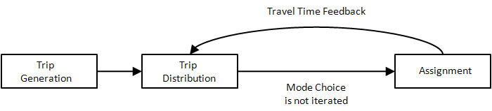
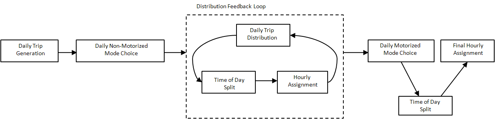
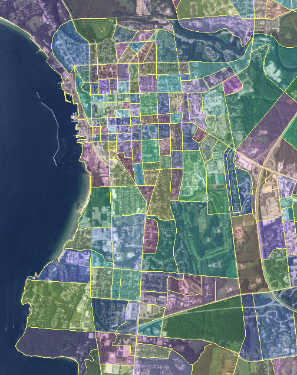
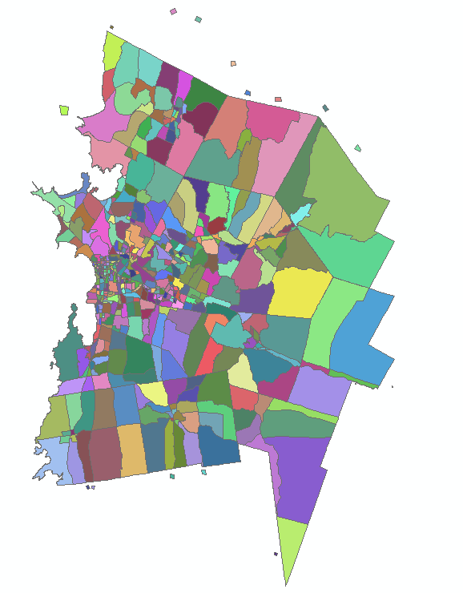
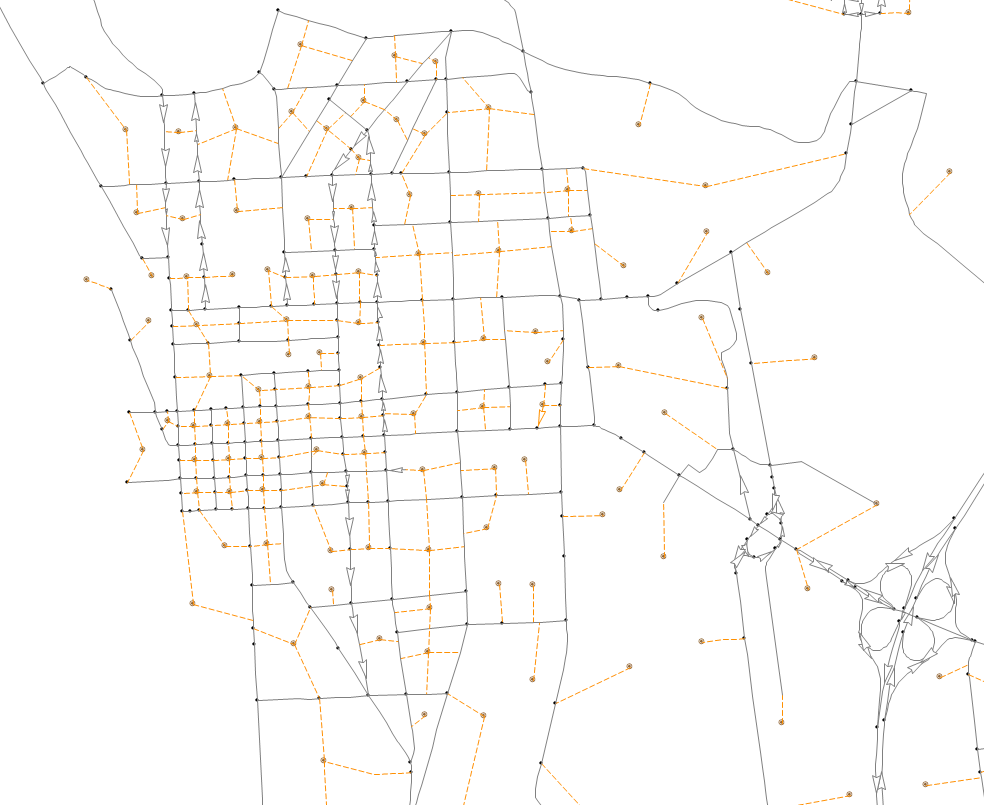
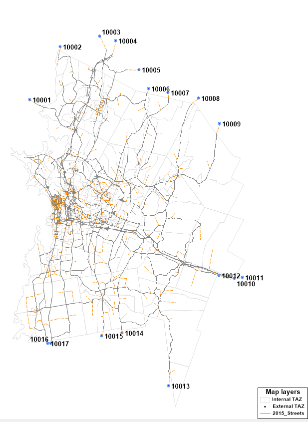
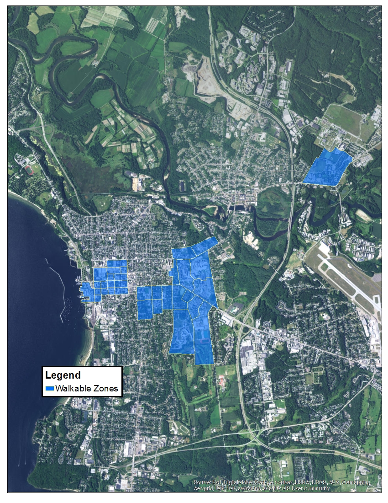

| <img src="../assets/media/image1.jpeg" | |
| style="width:3.12658in;height:2.08066in" | |
| alt="A car driving down a country road Description generated with very high confidence" /> | <img src="assets/media/image2.jpeg" |
| style="width:5.48101in;height:2.09827in" | |
| alt="A large body of water with a city in the background Description generated with very high confidence" /> | |
Table : List of Municipalities in the CCRPC Model
| 180 Battery Street, Suite 350 Burlington, VT 05401 802.383.0118 www.rsginc.com |
|
|---|---|
| prepared for: | |
| Chittenden County Regional Planning Commission | |
| Submitted By: | |
| rsg | |
Table : List of TAZs by Town
1.0 Introduction [1](#introduction)
1.1 | About CCRPC [1](#about-ccrpc)
1.2 | About Modeling Requirements [1](#about-modeling-requirements)
2.0 CCRPC Model Overview [2](#ccrpc-model-overview)
2.1 | Conceptual Overview of Model Structure [2](#conceptual-overview-of-model-structure)
2.2 | Brief Description of Model Components [4](#brief-description-of-model-components)
3.0 Network and Zonal Structure [5](#network-and-zonal-structure)
3.1 | TAZ Structure [5](#taz-structure)
3.2 | Network Structure [7](#network-structure)
3.3 | External TAZs [8](#external-tazs)
4.0 Socioeconomic Data [9](#socioeconomic-data)
4.1 | Households [9](#households)
4.2 | Employment [9](#employment)
5.0 Trip Generation [11](#trip-generation)
5.1 | Model Structure [11](#model-structure)
5.2 | Trip Production Rates [12](#trip-production-rates)
5.3 | Internal Trip Attractions [14](#internal-trip-attractions)
5.4 | External Trips [15](#external-trips)
External Travel Survey [17](#external-travel-survey)
External-External Trip Base-Year Assumptions [18](#external-external-trip-base-year-assumptions)
IXXI Trip Base-Year Assumptions [19](#ixxi-trip-base-year-assumptions)
External Trip Growth Rates [21](#external-trip-growth-rates)
5.5 | Trip Balancing [21](#trip-balancing)
6.0 Trip Distribution [22](#trip-distribution)
6.1 | Model Structure [22](#model-structure-1)
6.2 | Data Sources [22](#data-sources)
6.3 | Parameter Estimation [23](#parameter-estimation)
7.0 Time-of-Day Distribution [24](#time-of-day-distribution)
7.1 | Model Structure [24](#model-structure-2)
7.2 | Data Sources [24](#data-sources-1)
7.3 | Parameter Estimation [24](#parameter-estimation-1)
8.0 Vehicle Assignment [27](#vehicle-assignment)
8.1 | Model Structure [27](#model-structure-3)
8.2 | Data Sources [27](#data-sources-2)
8.3 | Parameter Estimation [28](#parameter-estimation-2)
8.5 | Auto Occupancy [34](#auto-occupancy)
9.0 Mode Choice [35](#mode-choice)
9.1 | Model Structure [35](#model-structure-4)
“Drive” vs. “Carpool” [38](#drive-vs.-carpool)
Transit Pathfinding and Assignment [38](#transit-pathfinding-and-assignment)
9.2 | Data Sources [38](#data-sources-3)
9.3 | Parameters [38](#parameters)
10.0 Travel Model Validation [41](#travel-model-validation)
10.1 | Traffic Assignment [41](#traffic-assignment)
Coefficient of Correlation [41](#coefficient-of-correlation)
Root Mean Squared Error [41](#root-mean-squared-error)
Absolute Error [42](#absolute-error)
Sum of Differences [42](#sum-of-differences)
Comparison to Calibration Guidelines [42](#comparison-to-calibration-guidelines)
Comparison to HPMS Daily VMT [44](#comparison-to-hpms-daily-vmt)
10.2 | Transit Assignment [44](#transit-assignment)
10.3 | Survey Comparisons [45](#survey-comparisons)
11.0 Land Use Input Files [49](#land-use-input-files)
11.1 | Model Structure [49](#model-structure-5)
12.0 Guidelines for Working with Complex Models [51](#guidelines-for-working-with-complex-models)
12.1 | Transportation Improvements [51](#transportation-improvements)
12.2 | Changes in Land-Use Activity [52](#changes-in-land-use-activity)
12.3 | Demand Management Strategies [53](#demand-management-strategies)
Parking Pricing [54](#parking-pricing)
SOV Reduction Strategies [54](#sov-reduction-strategies)
Changes in Transit Operations [54](#changes-in-transit-operations)
Road Pricing and HOV Lanes [54](#road-pricing-and-hov-lanes)
13.0 Model Versions [55](#model-versions)
13.1 | Model Versions [55](#model-versions-1)
V 1.0.0 (TransCAD 4.7 build 267) [55](#v-1.0.0-transcad-4.7-build-267)
V 1.1.0 (TransCAD 4.7 build 267) [55](#v-1.1.0-transcad-4.7-build-267)
V 2.1.0 (TransCAD 4.7 build 267) [55](#v-2.1.0-transcad-4.7-build-267)
V 2.1.1 (TransCAD 4.7 build 267) [55](#v-2.1.1-transcad-4.7-build-267)
V 2.1.2 (TransCAD 4.7 build 267) [55](#v-2.1.2-transcad-4.7-build-267)
V 2.1.3 – 12/12/2005 (TransCAD 4.7 build 267) [55](#v-2.1.3-12122005-transcad-4.7-build-267)
V 2.2.0 – 1/17/2006 (TransCAD 4.7 build 267) [55](#v-2.2.0-1172006-transcad-4.7-build-267)
V 2.2.1 – 1/25/2006 (TransCAD 4.7 build 267) [56](#v-2.2.1-1252006-transcad-4.7-build-267)
V 2.2.2 – 3/30/2006 (TransCAD 4.7 build 267) [56](#v-2.2.2-3302006-transcad-4.7-build-267)
V 2.2.3 – 4/4/2006 (TransCAD 4.7 build 267) [57](#v-2.2.3-442006-transcad-4.7-build-267)
V 2.2.4 – 5/10/2006 (TransCAD 4.7 build 267) [57](#v-2.2.4-5102006-transcad-4.7-build-267)
V 2.2.5 – 8/28/2006 (TransCAD 4.7 build 267) [57](#v-2.2.5-8282006-transcad-4.7-build-267)
V 2.3.0 – 1/22/2008 (TransCAD 4.8 build 500) [58](#v-2.3.0-1222008-transcad-4.8-build-500)
V 3.0.0 – 3/30/2009 (TransCAD 5.0 build 1545) [58](#v-3.0.0-3302009-transcad-5.0-build-1545)
V 3.1 – 09/17/2010 (TransCAD 5.0 build 1545) [58](#v-3.1-09172010-transcad-5.0-build-1545)
V 3.2-3 – 05/23/2012 (TransCAD 5.0 build 1545) [59](#v-3.2-3-05232012-transcad-5.0-build-1545)
V 4.0-0 – 08/21/2017 (TransCAD 7.0 build 12365) [59](#v-4.0-0-08212017-transcad-7.0-build-12365)
List of Figures
Figure 1: 4-Step Model Concept [2](#_Ref489356643)
Figure 2: 4-Step Model Concept with Feedback [3](#_Ref489356654)
Figure 3: Feedback in the CCRPC Model Structure [3](#_Ref489356699)
Figure 4: Complete CCRPC Model Structure [4](#_Toc491103321)
Figure 5: Burlington Area TAZ Structure [5](#_Ref489367508)
Figure 6: Chittenden County TAZ Structure [6](#_Ref489367509)
Figure 7: Modeled Road Network in Burlington [7](#_Ref489377220)
Figure 8: Employment by SIC and Sector Categories with Trip Attraction Rates [10](#_Ref489378885)
Figure 9: Complete Person-Days By Number of Trips Per Day (rMove™ 2016) [14](#_Toc491103326)
Figure 10: Location of External TAZs [16](#_Toc491103327)
Figure 11: Friction Factor Plots [23](#_Ref490659563)
Figure 12: Diurnal Distribution for Passenger Trips [24](#_Ref490662340)
Figure 13: Diurnal Distribution for Truck and External Trips [25](#_Ref490662362)
Figure 14: Volume-Delay Curves for Principal Arterials [30](#_Ref490682871)
Figure 15: Node Capacity Assumptions for Intersections [31](#_Ref491110735)
Figure 16: Sample Allocation of Node Capacity for Signalized Intersection [33](#_Toc491103332)
Figure 17: Sample Allocation of Node Capacity for Un-signalized Intersection [34](#_Ref490685008)
Figure 18: Mode Choice Model Nesting Structure [36](#_Toc491103334)
Figure 19: Walkable Zones [37](#_Ref491097681)
Figure 21: Transit Assignment [45](#_Ref491097926)
Figure 22: HBW Trip Length Frequency Distribution (NHTS versus Model) [46](#_Ref490835241)
Figure 23: HBO Trip Length Frequency Distribution (NHTS versus Model) [47](#_Ref490835253)
Figure 24: NHB Trip Length Frequency Distribution (NHTS versus Model) [47](#_Ref490835260)
Figure 25: Modified % Available Developable Land [50](#_Toc491103341)
List of Tables
Table 1: List of Municipalities in the CCRPC Model [6](#_Ref491957006)
Table 2: List of TAZs by Town [7](#_Ref489376902)
Table 3: External Traffic Zones [8](#_Toc491103344)
Table 4: Regional Distribution of Households by Size and Autos [9](#_Toc491103345)
Table 5: Trip Purpose Definitions [11](#_Ref489429618)
Table 6: HBW, HBO, and NHB Person Trip Production Rates [12](#_Ref489433593)
Table 7: Total Trips by Trip Purpose [13](#_Ref489434397)
Table 8: Total Trips per Household by Purpose (NHTS versus Model) [13](#_Toc491103349)
Table 9: Daily Internal Person Trip Attraction Rates [14](#_Toc491103350)
Table 11: External-to-External Trips (Passengers & Trucks) [18](#_Toc491103352)
Table 12: 2015 IX and XI Daily Vehicle Trips, by External TAZ [19](#_Toc491103353)
Table 13: Internal-to-External Trip Assumptions (% of internal productions) [20](#_Toc491103354)
Table 14: Percent IX and XI by District (NHTS versus Model) [21](#_Toc491103355)
Table 15: Diurnal Distribution %s [26](#_Toc491103356)
Table 16: Link Delay Parameters [29](#_Ref490682849)
Table 17: Node Class Definitions [31](#_Toc492568564)
Table 18: Auto Occupancy Factors [34](#_Toc492568565)
Table 19: Transit Pathfinding Parameters [39](#_Ref490742002)
Table 20: FHWA Assignment Calibration Guidelines [42](#_Ref490748713)
Table 21: Michigan DOT Volume-based Calibration Standards [43](#_Toc491103361)
Table 22: Comparison of Daily Vehicle Miles of Travel (HPMS versus Model) [44](#_Toc491103362)
Table 23: Average Trip Distance by Purpose (NHTS versus Model) [46](#_Ref490816485)
Table 24: Comparison of Mode Shares (2009 NHTS versus Model) [48](#_Ref490836468)
List of Equations
Equation 1: Gravity Model Functional Form [22](#_Ref490658963)
Equation 2: Friction Factor Functional Form [23](#_Ref490659541)
Equation 3: Logit-Based Volume Delay Function [28](#_Ref490682787)
Equation 4: Example of Logit Model [35](#_Ref490738200)
Equation 5: Pre-distribution Mode Choice Model Utility Equations [39](#_Ref490741731)
Equation 6: Post-Distribution Mode Choice Model Utility Equations [39](#_Toc491103371)
Equation 7: COEFFICIENT of Correlation [41](#_Toc491103372)
Equation 8: Root Mean Squared Error [41](#_Toc491103373)
Equation 9: Absolute Error [42](#_Toc491103374)
Equation 10: Sum of Differences [42](#_Toc491103375)
Equation 11: Generalized Attractiveness [49](#_Toc491103376)
Equation 12: Modified Percentage [49](#_Toc491103377)
Equation 13: Land Use Allocation [50](#_Toc491103378)
Introduction
About CCRPC
The U.S. Department of Transportation requires every metropolitan area with a population over 50,000 to have a designated Metropolitan Planning Organization (MPO) to qualify for receipt of federal highway and transit funds. The Governor of Vermont has designated the Chittenden County Regional Planning Commission (CCRPC) as the MPO responsible for transportation planning in Chittenden County.
To establish and maintain the certifiable transportation planning process required by the federal government as a precondition for receipt of federal transportation funding, the CCRPC as the designated MPO for the region must at a minimum produce and maintain three major products; they are:
-
The Long Range Metropolitan Transportation Plan (LRTP)
-
The Unified Planning Work Program (UPWP)
-
The Transportation Improvement Program (TIP)
Fundamental to this planning process is the need to understand future travel patterns and be able to analyze and make judgments on the relative merits of alternative future transportation investments throughout the Chittenden County. The CCRPC plans, prioritizes, and coordinates the use of federal transportation funds in Chittenden County and to accomplish these objectives the CCRPC has commissioned the development of a sophisticated system of computer models capable of analyzing future travel behavior and transportation system performance.
About Modeling Requirements
Joint FHWA/FTA planning regulations require that forecasts of future travel used in an area's transportation plan be based on an "analytical process". The sophistication of that analytical process is generally left to the discretion of the local planning agency. MPOs representing urbanized areas with a population over 200,000 are designated as Transportation Management Areas (TMAs) and must undergo a more formal certification review by FHWA and FTA field staff every three years. While it is theoretically possible for even a TMA to satisfy its "analytical process" without a travel model, it is not likely to have an adequate transportation planning process without one.
Beyond the Federal joint planning requirements, an MPO may need a travel model to satisfy two other Federal requirements. First, if a TMA is also an air quality non-attainment area that is serious or above for either ozone or carbon monoxide, EPA's Conformity Rule requires that forecasts of regional vehicle emissions must be based on an estimate of VMT derived from a network-based travel model meeting certain minimal modeling requirements. Second, FTA's New Starts criteria for major transit investment require forecasts of future transit demand that can only be derived using travel models.
The accepted practice for major transportation studies by any mode generally involves using relatively sophisticated demand models and network models. Modeling practice has evolved over the last 20 years to the point where many different transportation and land use scenarios can be evaluated on their relative merits for these studies. MPOs and their partnering agencies usually program regular updates to keep their models consistent and up-to-date with accepted practices.
CCRPC Model Overview
The Chittenden County Travel Demand Model, Version 4 (“the model”) is an integrated transportation demand model developed by Resource Systems Group (RSG) for the Chittenden County Regional Planning Commission.
The model estimates the movement of people and vehicles within the region during an average fall weekday in 2015. The 2015 Model is a daily model with hourly traffic assignments. The 2015 model is based on updated housing and employment estimates from 2015[^1], and includes a revised network. The model has also been transferred from TransCAD 5.0 to TransCAD 7.0. The model includes 528 internal Transportation Analysis Zones (TAZs) covering the 19 municipalities in Chittenden County. Traffic entering and exiting the region does so through 17 external zones.
Transportation planners can use the model to perform comprehensive regional transportation analyses, and to evaluate traffic impacts resulting from:
-
multi-modal transportation improvements,
-
changes in traveler behavior,
-
changes to the roadway system,
-
changes in land use activity, and
-
implementation of demand management strategies.
The purpose of this report is to describe:
-
the data sources and parameter estimation that are the foundation of the model,
-
the structure of the model itself,
-
the use of the model for forecasting purposes, and
-
the history of enhancements and changes made to the model.
Conceptual Overview of Model Structure
The CCRPC model is based on a four-step modeling process: trip generation, trip distribution, mode choice, and vehicle assignment. An overview of the model system is shown in Figure 1.
At the start of a full model run, trip generation uses land use data to calculate person trip ends at the transportation analysis zone (TAZ) level. These person trip ends are then paired into origins and destinations in the distribution model. In the next step, the person trips are split into each respective mode (e.g. auto, bus). Finally, the vehicle trips are assigned to the highway network in the assignment model.
Figure : 4-Step Model Concept
The model has an important feedback loop that has been added in Figure 2. Accessibility, which is a measure of the relative ease of travel, is calculated based on outputs from the assignment model, which is also an important determinant of trip distribution. Simply put, the decisions individuals make about where and how far to travel are a function of congestion levels and travel times. Therefore, it is customary to iterate between the trip distribution and assignment models in order to reach a convergent solution. The iteration loop in Figure 2 occurs within a given simulation year.
Figure : 4-Step Model Concept with Feedback

While transit travel is critical for many people in the CCRPC region, the reality is that transit carries a relatively small portion of the overall travel market in the region at this time. Since transit demand in the CCRPC region does not measurably impact roadway level-of-service, a decision was made to not include the mode choice model in the feedback loop to reduce model run time and complexity. However, the mode choice model is still part of the overall model, and the CCRPC model operates as presented in Figure 3. This model application decision does not limit the ability of the modeling system to adequately represent non-auto modes, and does not bias the model results, but it does significantly reduce model run time since the mode choice component takes the longest to run due to the nature of the complex path-building that is required.
Figure : Feedback in the CCRPC Model Structure
The model is calibrated to reflect traffic conditions on an average weekday in September, 2015. September was chosen because it is a time during which public schools and colleges are in session, while seasonal (summer) traffic is still observed.
The model is a daily model that performs hourly traffic assignments so as to account for both travel across an entire day and to adequately depict peak hour congestion. To accomplish this, the model relies on static time of day factors that divide the daily trips by hour for the purposes of assignment. This process is illustrated in Figure 4.
Figure : Complete CCRPC Model Structure

Brief Description of Model Components
While the model is a traditional 4-step model, the modeling process itself consists of several steps worth noting. Each of the steps below will be discussed in-depth later in the document.
-
Daily trip generation, which calculates the number of person trip ends generated by and attracted to each zone.
-
Daily trip distribution, which pairs the trip-ends for each zone for each of six trip purposes. The result of this is a person trip table for each trip type. One output of trip distribution is the person trip table for home to work that can be compared to the “Journey-to-Work” data provided by the Census Bureau.
-
Time of day (diurnal) distribution, which takes the daily production-attraction trip matrices and converts them to origin-destination matrices by time period (e.g. AM peak hour). Trips by time of day were initially estimated using the CCRPC trip diary survey and the NHTS in the previous version of this model (version 3). For this effort, adjustments to the diurnal distribution were made based on daily traffic profiles observed from over 30 automatic traffic recorder (ATR) count stations across Chittenden County.
-
Vehicle assignment, the most widely used model, which locates the best routes between each origin/destination pair and assigns the vehicle trips accordingly. An important output of this step is the number of vehicles on each roadway segment. Several other pieces of data can be extracted, including operating speeds, travel times, VMT, VHT, and V/C. In addition, one can configure the vehicle assignment to save all the vehicle trips that use a single link in either direction (select link analysis) or all the vehicle trips that originate or are destined for a zone (select zone analysis).
-
Highway/transit skim builder finds the best available travel path via each of the travel modes explicitly modeled, and describes the attributes of the best paths for each mode (i.e. travel time, cost, distance, etc.). Several modes are explicitly modeled in the CCRPC model, including auto, transit modes (bus, rail) and non-motorized modes. Skims are reasonable approximations of the travel time and cost between all pairs of TAZs, and skims are described for each travel mode. The path-finding algorithms are calibrated based on observed travel paths and observed relationships between volumes and congested speeds.
-
Mode choice model calculates which mode the person trips are likely to take based on availability and mode-specific parameters (e.g. time, cost, transit frequency). Mode choice provides a breakdown of person trips by mode. The mode choice model is developed based on observed data on mode preferences and what those preferences imply about sensitivities to mode attributes.
Network and Zonal Structure
The CCRPC Model is a zone-based forecasting tool, modeling traffic flows between transportation analysis zones (TAZs). The corresponding transportation network includes all segments functionally classified as collectors and above, as well as some more prominent local roads.
TAZ Structure
For the purposes of modeling traffic flow, the model includes 528 internal Transportation Analysis Zones (TAZs) covering the 19 municipalities in Chittenden County. Traffic entering and exiting the region does so through 17 external zones.
Figure 5 shows the TAZ structure for a portion of Burlington. Figure 6 shows the TAZ structure for the entire county.
Figure : Burlington Area TAZ Structure

Figure : Chittenden County TAZ Structure

The following municipalities are included in the CCRPC Model.
|
|
|
|---|
Table : External Traffic Zones
Table 2 contains a list of TAZ numbers by town.
| Town | TAZs | Town | TAZs |
|---|---|---|---|
| Bolton | 1 - 5 | Milton | 528 - 561 |
| Buel’s Gore | 30 | Richmond | 586 - 600 |
| Burlington | 55 - 177 | Shelburne | 625 - 648 |
| Charlotte | 202 - 215 | South Burlington | 673 - 759 |
| Colchester | 240 - 280 | St George | 784 - 785 |
| Essex Junction | 305 - 324 | Underhill | 810 - 813 |
| Essex | 349 - 384 | Westford | 838 - 843 |
| Hinesburg | 409 - 431 | Williston | 868 - 921 |
| Huntington | 456 - 463 | Winooski | 946 - 960 |
| Jericho | 488 - 503 | Externals | 10001 - 10017 |
Table : Regional Distribution of Households by Size and Autos
Network Structure
Major roadways within the modeling region were selected to reliably represent the entire road network. There are approximately 2,500 road segments represented as links, of which approximately 240 are one-way only. There are over 1,500 TAZs and intersections represented as endpoints also known as nodes. Figure 7 shows a portion of the TransCAD network in the vicinity of the City of Burlington.
Figure : Modeled Road Network in Burlington

External TAZs
A trip with one origin or destination outside of the model boundary is considered an external trip. To assist in accounting for these types of trips, counts are taken at selected roads at the boundary of the model. These roads are termed external load links. Trips from outside the network are loaded into the network through these links.
| External TAZ | Roadway | Count Location | External TAZ | Roadway | Count Location |
|---|---|---|---|---|---|
| 10001 | US-2 | Just west of Bear Trap Rd | 10010 | US-2 | At Waterbury TL |
| 10002 | Lake Rd | At Georgia TL | 10011 | I-89 | Between Exits 10 and 11 |
| 10003 | US-7 | North of Exit 18 | 10012 | River Rd | At Duxbury TL |
| 10004 | I-89 | North of Exit 18 | 10013 | Main Rd | At Buel’s Gore TL |
| 10005 | VT-104A | Just East of Arrowhead Lake Rd | 10014 | VT-116 | Just North of Starksboro TL |
| 10006 | VT-128 | Between Westford-Milton Rd and Fairfax | 10015 | Silver St | At Monkton TL |
| 10007 | Cambridge Rd | Between VT-128 and Fairfax | 10016 | Mt Philo Rd | Just South of Spear St |
| 10008 | VT-15 | Just South of Cambridge TL | 10017 | US-7 | South of Ferry Rd |
| 10009 | Pleasant Valley Rd | By Chad Rd |
Table : Trip Purpose Definitions
Socioeconomic Data
Households
Housing data was collected by the Chittenden County Regional Planning Commission (CCRPC) based on the most recent 2015 municipal Grand Lists. CCRPC staff supplemented the grand list data with direct communication with each municipality to confirm regional household tracking data. The CCRPC maintains the authoritative regional dataset of household development and growth trends.
The housing data includes the total number of households per TAZ, classified by household size and auto ownership. The household size and auto ownership distribution assumptions come from the 2010 Census, at the Census Tract level.
| Household Size | # of Vehicles | |||
|---|---|---|---|---|
| 0 | 1 | 2 | 3+ | |
| 1 | 5% | 19% | 3% | 0% |
| 2 | 2% | 8% | 23% | 5% |
| 3 | 0% | 3% | 6% | 5% |
| 4+ | 0% | 2% | 10% | 7% |
Table : HBW, HBO, and NHB Person Trip Production Rates
There are 68,272 households within the model region and 7,749 group quarters. Group quarters are treated as 75% one person-zero vehicle and 25% two person-one vehicle households. Group quarters are not multi-family or apartment buildings. These are most typically student housing, with one address but multiple residents.
Employment
The CCRPC collected employment land use data from two distinct sources: Dunn & Bradstreet employment data provider and the Vermont Department of Employment and Training (DET). The CCRPC supplemented gaps in the Dunn & Bradstreet data using the VT DET data. The Dunn & Bradstreet data contains information such as the name of the employer, the address of the employer, the general number of employees, and the employer’s NAICS code. The NAICS codes were consolidated into Standard Industrial Classification (SIC) codes.
Based on the addresses of the employers, CCRPC was able to geocode 6,439 of 7,014 total employers. For those addresses that were not easily geocoded, the CCRPC focused more resources to those employers with more than 5 employees. Based on this effort, the CCRPC was able to strike 93,217 of 94,733 total employees included in the dataset.
Once the employment data was geocoded, each employer could be assigned to one of the 528 internal transportation analysis zones (TAZs).
Employment was then aggregated into nine employment categories created to reflect particular trip attraction similarities: Accommodations, College, Commercial, Industrial, Institutional, K-12 School, Retail, Special Commercial, and Special Retail. Figure 8 shows the categorization of the SIC codes.
Figure : Employment by SIC and Sector Categories with Trip Attraction Rates

Trip Generation
The trip generation model estimates person trips originating in and destined for each TAZ in the model. These estimates result from multiplying the land use data for each TAZ, (the number of dwelling units and employment numbers) by regional trip generation coefficients.
Model Structure
Trip generation within the model is calculated for 6 distinct internal trip types, distinguished by trip purpose, and 3 types of commercial traffic. External trips, which have at least one trip end located at an external station, are added as fixed inputs. Table 5 presents the 6 internal trip types as well as the 3 commercial vehicle trip types and 3 external trip types.
| Trip Type | Abbreviation | Description |
|---|---|---|
| Home Based Work | HBW | A trip where one end is home and the other end is work |
| Home Based Other | HBO | A trip where one end is home and the other end is NOT work |
| Non-Home-Based | NHB | A trip where neither end is home |
| Light Commercial | L_Comm | A trip made by a commercial vehicle with 4 tires |
| Medium Commercial | M_Comm | A trip made by a commercial vehicle with 6 tires |
| Heavy Commercial | H_Comm | A trip made by a commercial vehicle with >6 tires |
| Internal-to-External | IX | A trip originating inside of the model and terminating outside of the model zone geography |
| External-to-Internal | XI | A trip originating outside of the model zone geography and terminating inside of the model |
| External-to-External | XX | A trip originating and terminating outside of the model geography, but passing through the model en route |
Table : Total Trips by Trip Purpose
At this stage trip ends are categorized as “productions” and “attractions.” Production ends occur at the trip maker’s residence. Trip productions are based on the number and type of housing units within a TAZ. For non-home-based trips, where the residence is not on either end of the trip, productions are calculated based on the predilections of household occupants to make these types of trips and is estimated statistically from survey data.
Attraction ends are based on the number of non-home land uses including workplaces, shops, other residences and schools. The total number of attractions for each trip type is set equal to the total number of productions. If productions and attractions are out of balance, the attractions are adjusted to match total regional productions.
Productions and attractions are different than origins and destinations in that they do not indicate the true direction of travel. When one leaves home for work in the morning, the origin (home) is also the production. In the afternoon, when one returns home from work, it is the destination (home) which is the production.
Daily trip production and attraction models were developed for earlier iterations of the CCRPC model from a combination of sources, including the 1998 CCRPC household diary survey, the 2001 and 2009 National Household Travel Surveys (NHTS), the ITE trip generation manual, and comparison to other models.
Trip Production Rates
The CCRPC model uses a cross-classification approach to estimating trip productions. This approach is widely used in other regional network models. For each TAZ, households are cross-classified according to size (1 person, 2 persons, 3 persons, or 4+ persons) and auto ownership (0 auto, 1 auto, 2 autos, or 3+ autos). The cross-classification approach required that separate trip production estimates be developed for each of the resulting 16 household types (4 x 4).
Table 6 shows the trip production rates for internal HBW, HBO and NHB trip productions. The production rates were estimated using the 1998 Chittenden County household survey and the 2001 NHTS survey. CCRPC purchased the Add-On data for the 2009 NHTS which was also used to check and update the trip production rates, and were further informed by an rMove™ convenience survey conducted by RSG for the CCRPC in the fall of 2016. Each number entered into the production tables is in units of person trips per household per day. The trip generation rates were adjusted by comparing them to rates from newer surveys for similar geographical regions.
| Trip Type | HH Size | HH Vehicles | |||
|---|---|---|---|---|---|
| 0 | 1 | 2 | 3+ | ||
| HBW Trip Rates | 1 | 0.3848 | 0.6864 | 0.7072 | 1.2064 |
| 2 | 0.3952 | 1.092 | 1.4872 | 1.8408 | |
| 3 | 0.416 | 1.04 | 2.028 | 2.6936 | |
| 4+ | 0.8944 | 1.6848 | 2.0488 | 2.7144 | |
| HBO Trip Rates | 1 | 1.5912 | 2.0384 | 2.3192 | 1.872 |
| 2 | 2.444 | 4.3368 | 3.9 | 3.4944 | |
| 3 | 2.4648 | 4.7944 | 4.9608 | 4.316 | |
| 4+ | 5.8032 | 5.2728 | 8.0496 | 6.6872 | |
| NHB Trip Rates | 1 | 0.78 | 1.4872 | 1.508 | 1.6536 |
| 2 | 1.1752 | 1.872 | 2.288 | 2.2984 | |
| 3 | 0.8008 | 3.5048 | 2.7768 | 2.6728 | |
| 4+ | 4.0248 | 3.0472 | 4.1704 | 4.5656 |
Table : Total Trips per Household by Purpose (NHTS versus Model)
There are estimated to be an average of 773,567 daily person trips (Table 7) in the Chittenden County model region for the 2015 base year.
| Trip Type | # of Trips | % of Total |
|---|---|---|
| Home Based Work | 94,758 | 12.2% |
| Home Based Other | 274,757 | 35.5% |
| Non-Home Based | 173,485 | 22.4% |
| Light Commercial | 111,635 | 14.4% |
| Medium Commercial | 13,378 | 1.7% |
| Heavy Commercial | 2,879 | 0.4% |
| Internal-to-External | 35,870 | 4.6% |
| External-to-Internal | 63,578 | 8.2% |
| External-to-External | 3,227 | 0.4% |
| Total Person Trips | 773,567 | 100.0% |
Table : Daily Internal Person Trip Attraction Rates
The total regional trip productions by purpose were compared to the trip rates extracted from the 2009 NHTS Add-On survey data that was purchased by CCRPC. The figure below compares the NHTS rates (trips per household) to the total regional trips estimated by the Version 4 travel model. While the overall Version 4 travel model trips per household are lower than the NHTS survey, they are in line with observed trips per household from the 2016 rMove™ survey, which noted approximately 85% of all respondents completed 8 trips per day or fewer.
| Purpose | NHTS | Model |
|---|---|---|
| HBW | 1.2 | 1.39 |
| HBO | 4.7 | 4.02 |
| NHB | 4.4 | 2.54 |
| Total | 10.2 | 7.95 |
Table : Daily Internal Person Trip Attraction Rates by Trip Purpose per Employee
Figure : Complete Person-Days By Number of Trips Per Day (rMove™ 2016)
Internal Trip Attractions
Trip attraction models for HBW, HBO and NHB trip purposes were developed originally from the CCRPC diary survey and the light, medium and heavy commercial trip rates came from FHWA’s Quick Response Freight Manual (DTFH61-93-C-00075 & DTFH61-93-C-00216, Sept-1996, http://tmip.fhwa.dot.gov/resources/clearinghouse/docs/quick/quick.pdf). The estimated model coefficients were then calibrated so that trip attractions by purpose would be consistent with trip productions and proportionate to historic ITE trip generation rates by land-use type. Each number entered into the attraction table (Table 10) is in units of person trips per employee or housing unit per day.
| Land Use Class | Number of Employees | Percent of Total Employees | Average ITE Rate |
|---|---|---|---|
| Accommodations | 1,911 | 1.6% | 5.72 |
| College | 8,534 | 7.2% | 6.39 |
| Commercial | 35,396 | 29.7% | 4.60 |
| Industrial | 22,171 | 18.6% | 3.83 |
| Institutional | 18,437 | 15.5% | 7.86 |
| K12 | 4,786 | 4.0% | 12.41 |
| Retail | 19,986 | 16.8% | 12.41 |
| Special Commercial | 2,547 | 2.1% | 15.98 |
| Special Retail | 5,525 | 4.6% | 29.33 |
Table : External-to-External Trips (Passengers & Trucks)
| Land-Use Class | HBW | HBO | NHB | L_COMM | M_COMM | H_COMM |
|---|---|---|---|---|---|---|
| Accommodations | 0.717 | 2.54 | 1.437 | 0.874 | 0.136 | 0.018 |
| College | 0.717 | 2.97 | 1.68 | 0.874 | 0.136 | 0.018 |
| Commercial | 0.717 | 1.821 | 1.03 | 0.874 | 0.136 | 0.018 |
| Industrial | 0.717 | 0.348 | 0.197 | 1.876 | 0.484 | 0.208 |
| Institutional | 0.717 | 3.907 | 2.21 | 0.874 | 0.136 | 0.018 |
| K12 | 0.717 | 6.814 | 3.854 | 0.874 | 0.136 | 0.018 |
| Retail | 0.717 | 5.926 | 3.352 | 1.776 | 0.506 | 0.13 |
| Special Commercial | 0.717 | 8.209 | 4.643 | 1.776 | 0.506 | 0.13 |
| Special Retail | 0.717 | 16.736 | 9.465 | 1.776 | 0.506 | 0.13 |
| Households | 0 | 0.24 | 0.12 | 0.502 | 0.198 | 0 |
Table : 2015 IX and XI Daily Vehicle Trips, by External TAZ
External Trips
Trips are further categorized based on whether both the origin and destination are internal to Chittenden County, or whether the trip has an external trip end. External trips can be classified as internal-to-external (IX), external-to-internal (XI), or external-to-external (XX).
Simple trip generation and distribution models cannot estimate these types of trips since land use data would need to be estimated for all areas outside the model region. Instead, to assist in estimating these types of trips, counts are taken at selected roads at the boundary of the model. These roads are termed external load links. Trips from outside the network are loaded into the network through these links.
Figure : Location of External TAZs

In the base year, the total IX, XI and XX trips are set to match base year traffic count data at the external stations. The percent of XX trips is derived in large part from an external license plate survey conducted for earlier model iteration in August 2004, while the remaining external trips will be split among IX and XI trips based on the AM and PM directional imbalance observed in traffic counts as a proxy for the home-end (production) locations of the trips. We assume for most external TAZs that the IX and XI trips will be 35% internal-to-external (IX) and 65% external-to-internal (XI), meaning approximately 2/3 of the IXXI demand will be generated externally (i.e. by people who live outside the region). These assumptions are allowed to vary by external TAZ location and do for I-89 south of the region, where the split is 55/45 in favor of XI trips.
External Travel Survey
In order to estimate the volume of external-external and external-internal traffic, for both trucks and passenger cars, a license plate survey was performed for a previous model iteration (version 2) in August 2004 to collect license plate data on I-89 at the southern and northern edges of the study region. The goal was to record every license plate and vehicle classification, and also to track the percentage of vehicles traveling through the county.
The southern boundary of the study area is between the Waterbury (Exit 10) and the Richmond (Exit 11) and the northern boundary is between the Georgia Center (Exit 18) and the St. Albans (Exit 19). All of the survey sites were located at the rest stops between Exits 10 and 11 and Exits 18 and 19. Each site consisted of a professional photographer with a digital camera and a counter who counted every vehicle, and both were located on the grass just next to the highway between the rest stop and the road.
These data were collected for 2 hours surrounding the AM and PM peak hours, since they were initially used in the peak hour models. However, these data remain useful as a starting point to make assumptions about external-external trip distribution patterns and the split of traffic between trucks and passenger cars. Traffic counts are also used to refine the survey results and together yield the final set of external related traffic assumptions.
External-External Trip Base-Year Assumptions
Base year external-external trips are added directly into the vehicle trip table. The external-external trips used in the 2015 model reflect daily traffic.
| External TAZ | 10001 | 10002 | 10003 | 10004 | 10005 | 10006 | 10007 | 10008 | 10009 | 10010 | 10011 | 10012 | 10013 | 10014 | 10015 | 10016 | 10017 | Total | |
|---|---|---|---|---|---|---|---|---|---|---|---|---|---|---|---|---|---|---|---|
| 10001 | 0 | 1 | 3 | 66 | 0 | 4 | 0 | 2 | 0 | 1 | 79 | 0 | 0 | 14 | 1 | 0 | 12 | 183 | |
| 10002 | 1 | 0 | 0 | 0 | 0 | 0 | 0 | 0 | 0 | 0 | 1 | 0 | 0 | 0 | 0 | 0 | 0 | 2 | |
| 10003 | 3 | 0 | 5 | 0 | 3 | 0 | 0 | 0 | 0 | 0 | 62 | 0 | 0 | 0 | 0 | 0 | 8 | 81 | |
| 10004 | 66 | 0 | 0 | 5 | 17 | 2 | 1 | 1 | 0 | 4 | 1083 | 0 | 0 | 10 | 5 | 0 | 66 | 1260 | |
| 10005 | 0 | 0 | 3 | 17 | 0 | 0 | 0 | 0 | 0 | 0 | 16 | 0 | 0 | 0 | 0 | 0 | 6 | 42 | |
| 10006 | 4 | 0 | 0 | 2 | 0 | 0 | 0 | 0 | 0 | 0 | 22 | 0 | 0 | 1 | 0 | 0 | 7 | 36 | |
| 10007 | 0 | 0 | 0 | 1 | 0 | 0 | 0 | 0 | 0 | 0 | 15 | 0 | 0 | 0 | 0 | 0 | 7 | 23 | |
| 10008 | 2 | 0 | 0 | 1 | 0 | 0 | 0 | 0 | 0 | 1 | 20 | 0 | 0 | 2 | 1 | 0 | 4 | 31 | |
| 10009 | 0 | 0 | 0 | 0 | 0 | 0 | 0 | 0 | 0 | 0 | 1 | 0 | 1 | 0 | 0 | 0 | 1 | 3 | |
| 10010 | 1 | 0 | 0 | 4 | 0 | 0 | 0 | 1 | 0 | 0 | 0 | 0 | 1 | 1 | 0 | 1 | 1 | 10 | |
| 10011 | 79 | 1 | 62 | 1083 | 16 | 22 | 15 | 20 | 1 | 0 | 0 | 0 | 0 | 15 | 5 | 0 | 29 | 1348 | |
| 10012 | 0 | 0 | 0 | 0 | 0 | 0 | 0 | 0 | 0 | 0 | 0 | 0 | 0 | 0 | 0 | 0 | 1 | 1 | |
| 10013 | 0 | 0 | 0 | 0 | 0 | 0 | 0 | 0 | 1 | 1 | 0 | 0 | 0 | 0 | 0 | 0 | 0 | 2 | |
| 10014 | 14 | 0 | 0 | 10 | 0 | 1 | 0 | 2 | 0 | 1 | 15 | 0 | 0 | 0 | 0 | 0 | 3 | 46 | |
| 10015 | 1 | 0 | 0 | 5 | 0 | 0 | 0 | 1 | 0 | 0 | 5 | 0 | 0 | 0 | 0 | 0 | 0 | 12 | |
| 10016 | 0 | 0 | 0 | 0 | 0 | 0 | 0 | 0 | 0 | 1 | 0 | 0 | 0 | 0 | 0 | 0 | 0 | 1 | |
| 10017 | 12 | 0 | 8 | 66 | 6 | 7 | 7 | 4 | 1 | 1 | 29 | 1 | 0 | 3 | 0 | 0 | 0 | 145 | |
| Total | 183 | 2 | 81 | 1260 | 42 | 36 | 23 | 31 | 3 | 10 | 1348 | 1 | 2 | 46 | 12 | 1 | 145 | 3226 | |
| 3226 |
Table : Internal-to-External Trip Assumptions (% of internal productions)
IXXI Trip Base-Year Assumptions
Base year IX and XI trips are set to match 2015 base year traffic count data at the external stations. The internal trip ends are estimated differently for IX trips (produced inside the region) and XI trips (produced outside the region).
| External TAZ | External-to-Internal Trips | Internal-to-External Trips |
|---|---|---|
| 10001 | 6,276 | 3,133 |
| 10002 | 574 | 290 |
| 10003 | 2,423 | 1,225 |
| 10004 | 11,047 | 5,073 |
| 10005 | 2,897 | 1,455 |
| 10006 | 3,068 | 1,580 |
| 10007 | 90 | 35 |
| 10008 | 4,151 | 2,138 |
| 10009 | 922 | 418 |
| 10010 | 1,895 | 936 |
| 10011 | 14,224 | 11,099 |
| 10012 | 185 | 96 |
| 10013 | 338 | 170 |
| 10014 | 2,310 | 1,128 |
| 10015 | 4,185 | 2,113 |
| 10016 | 1,052 | 705 |
| 10017 | 7,944 | 4,277 |
| ALL | 63,579 | 35,870 |
Table : Percent IX and XI by District (NHTS versus Model)
The IX internal trip generation rates vary by town and were estimated using the 2000 Census data. Residents of towns that are closer to the model boundary generate more IX trips as a percent of the residents’ trip-making.
| Town | Model%_IX | Census % IX |
|---|---|---|
| Bolton | 16.8% | 16.8% |
| Buel’s Gore | 12.9% | 50.0% |
| Burlington | 5.9% | 5.9% |
| Charlotte | 14.3% | 14.3% |
| Colchester | 3.4% | 3.4% |
| Essex Junction | 6.9% | - |
| Essex | 6.9% | 6.9% |
| Hinesburg | 11.1% | 11.1% |
| Huntington | 11.0% | 11.0% |
| Jericho | 7.7% | 7.7% |
| Milton | 6.1% | 6.1% |
| Richmond | 9.0% | 9.0% |
| Shelburne | 5.5% | 5.5% |
| South Burlington | 8.2% | 8.2% |
| St George | 8.0% | 8.0% |
| Underhill | 12.7% | 12.7% |
| Westford | 11.4% | 11.4% |
| Williston | 7.3% | 7.3% |
Table : Diurnal Distribution %s
The internal ends of the XI trips are estimated based on the total attractions in each TAZ, and the distance from the external station. The notion is that XI trips are produced externally to the model, and tend to be people traveling into the model region to work or shop. The internal trip ends for XI trips are proportional to TAZ-level attractions, but are scaled to the external traffic counts, and distributed using a gravity model.
The 2009 NHTS Add-On survey data was also used to confirm the internal-external and external-internal trip assumptions inherent to the CCRPC Version 4 travel model. The NHTS provides data that can be used to evaluate the share of IX and XI trips at the district level. The figure below compares the share of IX and XI from the survey and the model by district. The IX calculation is the share of trips produced within the district which go outside the region. The XI calculation is the share of XI trips that are attracted to each district and therefore these percentages sum to 100%.
The ‘Core’ district is comprised of Burlington, South Burlington and Winooski. The ‘Inner’ district is comprised of Colchester, Essex, Williston, Jericho, Richmond, St. George, and Shelburne. The ‘Outer’ district is comprised of Milton, Westford, Underhill, Bolton, Huntington, Buel’s Gore, Hinesburg and Charlotte.
| Percent IX by District | Percent XI by District | ||||
|---|---|---|---|---|---|
| District | NHTS | Model | District | NHTS | Model |
| Core | 5.0% | 5.4% | Core | 56.1% | 54.7% |
| Inner | 5.9% | 4.8% | Inner | 38.7% | 36.6% |
| Outer | 10.2% | 9.8% | Outer | 5.2% | 8.7% |
Table : Link Delay Parameters
External Trip Growth Rates
Future year external trips are assumed to grow annually at a user-specified rate, which can vary by external TAZ. In the model, the external trips are initially assumed to have a growth rate of 0.5% per year but this rate is adjustable.
Trip Balancing
It is common practice in transportation modeling to balance attractions to productions. The rationale is that productions are more fundamental. More housing will produce more trips; more retail space may simply draw customers from other retail space.
This practice has important implications for using the model to analyze regional traffic impacts emanating from changes in employment land use. For example, if traffic impacts of a proposed major employer are to be analyzed, the projected amount of new employment must be inserted into appropriate TAZ in the socio-economic database. These new jobs will attract new trips to these TAZs. However, without also increasing by some amount the number of residences in the region, no net increase in trips will result. Thus, these types of scenarios must be carefully considered as to their employment and residential impacts in order for the model to lend proper insight into transportation implications.
Incorporating special generator attraction rates introduces some complexity to the balancing calculations. Balancing adjustment factors are calculated for each of the trip purposes. It is not desirable to factor the special generator attractions because they are based on location specific traffic counts that reflect the unique trip making characteristics of the land use. Therefore, only attractions that are not special generators are factored in the balancing process. The following general formula is used to calculate the balancing factors for each non-truck trip type:
Balancing Adjustment Factor = (Productions – Special Generator Attractions)/(Non Special Generator Attractions)
For trucks and NHB trips, where the connection to home-based productions is less obvious, the destination trip end (an attraction) is balanced to the origin trip end (an attraction).
Trip Distribution
Trip distribution is the pairing of productions and attractions to form complete trips. The pairing is done separately within each trip type. For example, HBW productions from residences are paired with HBW attractions at work places.
The trip distribution within a trip type is done using a gravity model. The concept underlying a gravity model is that trip end locations that are closer together will exhibit a stronger attraction than those that are farther apart. It is also true, however, that longer trips have a larger travel radius and therefore many more potential destinations within that radius, as the area within a travel radius grows with the square of the radius. Furthermore, trip end locations with higher trip generation will be more attractive than trip end locations with lower trip generation.
Model Structure
The functional form of the distribution model is shown in Equation 1. We have chosen to use a doubly constrained gravity model for all trip types except the external trips, which are singly constrained to the external trip end totals. The trip distribution model is doubly constrained to ensure that the total productions and attractions for each zone do not deviate from the balanced trip generation output. To doubly-constrain a trip distribution, an iterative process is used that alternatively balances to productions by evaluating the first equation and then balances to attractions by evaluating the second equation. The iterative process is complete when either the convergence criterion is met (error of 0.01) or the maximum number of iterations is reached (30). This function is applied separately for each of the trip types.
Equation : Gravity Model Functional Form

Data Sources
The inputs to trip distribution include productions and attractions by TAZ, and a travel time impedance matrix representing the travel time between each pair of TAZs. The impedance is used in the trip distribution model to estimate friction factors, which represent the impact of travel time on the likelihood of travel and are calibrated so that observed trip lengths and times are reasonable and match patterns in survey data.
Observed trip length distributions were estimated using the 2009 NHTS Add-On survey data for work and non-work passenger trips. This trip length distribution is weighted by the number of destinations representing the attraction. Gravity model parameters were estimated to match the surveyed trip length distribution. The gravity model trip distribution results were then graphed with the surveyed travel length distribution data to determine the closest approximate match for each trip type.
Parameter Estimation
The friction factor equations take the form shown in Equation 2 and are plotted in Figure 11 with the values scaled between 0 and 1 to be comparable across trip purposes. HBW trips tend to be longer than NHB or HBO trips, and this is reflected in the calibrated friction factors. The truck trip friction factors came directly from the Quick Response Freight Manual.
Equation : Friction Factor Functional Form

Figure : Friction Factor Plots

Time-of-Day Distribution
Model Structure
The trip generation, trip distribution and mode split models estimate daily trips. The traffic assignment model then assigns traffic by hour. Trips are allocated to each hour of the day, and converted to origin-destination format, based on time-of-day factors derived from the 2009 NHTS Add-on survey data, and modifications to match observed daily traffic profiles from over 30 automatic traffic recorder (ATR) count stations across Chittenden County.
Data Sources
The diurnal distribution was estimated using the 1998 CCRPC household travel survey, and adjusted to more closely match 2015 observed traffic counts and compared to the 2009 National Household Travel Survey data.
Parameter Estimation
The estimate of trips by time of day is presented below for the primary trip purposes. For home-based trips, the time-of-day (diurnal) distribution is unique by direction (e.g. home-to-work vs. work-to-home), but for NHB trips the directionality of the trip matrix does not vary by time of day.
The diurnal distributions for HBW, HBO, and NHB trips by direction (i.e. to or from home) are shown in Figure 12. The diurnal distributions for light, medium, heavy commercial trips and external trips by direction are shown inFigure 13. In each case, the “DEP” stands for departing trips and implies trips from the production TAZ (home for home-based trips) to the attraction TAZ.
Figure : Diurnal Distribution for Passenger Trips

Figure : Diurnal Distribution for Truck and External Trips

| Hour | DEP HBW | RET HBW | DEP HBO | RET HBO | DEP NHB | RET NHB | DEP Light COMM | RET Light COMM | DEP MEd Comm | RET Med Comm | DEP Heavy COMM | RET Heavy Comm | DEP EXT | RET EXT |
|---|---|---|---|---|---|---|---|---|---|---|---|---|---|---|
| 0 | 0.0% | 0.3% | 0.1% | 0.4% | 0.0% | 0.0% | 0.5% | 0.5% | 0.4% | 0.4% | 1.1% | 1.1% | 0.1% | 0.3% |
| 1 | 0.0% | 0.1% | 0.1% | 0.2% | 0.1% | 0.1% | 0.2% | 0.2% | 0.3% | 0.3% | 0.8% | 0.8% | 0.0% | 0.1% |
| 2 | 0.0% | 0.2% | 0.1% | 0.1% | 0.1% | 0.1% | 0.2% | 0.2% | 0.3% | 0.3% | 0.7% | 0.7% | 0.0% | 0.1% |
| 3 | 0.1% | 0.0% | 0.5% | 0.1% | 0.0% | 0.0% | 0.2% | 0.2% | 0.2% | 0.2% | 0.8% | 0.8% | 0.2% | 0.0% |
| 4 | 1.1% | 0.0% | 0.3% | 0.1% | 0.0% | 0.0% | 0.4% | 0.4% | 0.6% | 0.6% | 1.1% | 1.1% | 0.6% | 0.0% |
| 5 | 3.1% | 0.2% | 0.5% | 0.1% | 0.0% | 0.0% | 1.2% | 1.2% | 1.5% | 1.6% | 1.8% | 1.8% | 1.7% | 0.1% |
| 6 | 9.0% | 0.3% | 1.3% | 0.1% | 0.3% | 0.3% | 2.8% | 2.8% | 2.5% | 2.5% | 2.1% | 2.1% | 4.8% | 0.2% |
| 7 | 12.4% | 0.2% | 3.9% | 0.8% | 1.9% | 1.9% | 2.9% | 2.9% | 3.4% | 3.4% | 2.8% | 2.8% | 7.7% | 0.3% |
| 8 | 9.8% | 0.2% | 5.0% | 1.3% | 2.6% | 2.6% | 2.9% | 2.9% | 3.6% | 3.6% | 2.5% | 2.5% | 6.8% | 0.6% |
| 9 | 3.4% | 0.2% | 5.0% | 1.5% | 2.8% | 2.8% | 3.1% | 3.1% | 4.0% | 4.0% | 3.5% | 3.5% | 3.5% | 0.9% |
| 10 | 1.6% | 0.8% | 4.2% | 2.0% | 3.4% | 3.4% | 3.3% | 3.3% | 3.6% | 3.6% | 3.1% | 3.1% | 2.5% | 1.5% |
| 11 | 1.1% | 1.5% | 3.0% | 2.6% | 4.8% | 4.8% | 3.0% | 3.0% | 3.8% | 3.8% | 3.4% | 3.4% | 2.3% | 2.4% |
| 12 | 1.4% | 2.2% | 2.7% | 2.7% | 5.9% | 5.9% | 2.9% | 2.9% | 3.4% | 3.4% | 3.4% | 3.4% | 2.5% | 2.9% |
| 13 | 2.5% | 1.1% | 3.5% | 2.9% | 4.3% | 4.3% | 3.3% | 3.3% | 3.6% | 3.6% | 3.1% | 3.1% | 3.1% | 2.2% |
| 14 | 1.1% | 2.9% | 2.3% | 4.5% | 4.5% | 4.5% | 3.2% | 3.2% | 3.8% | 3.8% | 3.0% | 3.0% | 2.2% | 4.1% |
| 15 | 1.1% | 5.6% | 2.4% | 4.3% | 4.9% | 4.9% | 3.6% | 3.6% | 3.8% | 3.8% | 2.6% | 2.6% | 2.2% | 5.4% |
| 16 | 0.4% | 9.4% | 3.3% | 4.8% | 4.2% | 4.2% | 4.2% | 4.2% | 3.3% | 3.3% | 2.5% | 2.5% | 2.1% | 7.1% |
| 17 | 0.6% | 11.8% | 2.6% | 6.0% | 3.5% | 3.5% | 3.3% | 3.3% | 2.5% | 2.5% | 3.5% | 3.5% | 2.3% | 8.4% |
| 18 | 0.8% | 4.5% | 4.0% | 4.0% | 2.2% | 2.2% | 2.7% | 2.7% | 1.7% | 1.7% | 1.9% | 1.9% | 2.2% | 3.7% |
| 19 | 0.2% | 2.4% | 3.0% | 3.4% | 1.9% | 1.9% | 1.6% | 1.6% | 1.2% | 1.2% | 1.4% | 1.4% | 1.4% | 2.8% |
| 20 | 0.2% | 1.6% | 1.3% | 3.7% | 1.1% | 1.1% | 1.6% | 1.6% | 0.8% | 0.8% | 1.4% | 1.4% | 0.8% | 2.4% |
| 21 | 0.1% | 1.9% | 0.5% | 2.4% | 0.9% | 0.9% | 1.3% | 1.3% | 0.7% | 0.7% | 1.2% | 1.2% | 0.5% | 2.1% |
| 22 | 0.0% | 1.5% | 0.4% | 1.4% | 0.4% | 0.4% | 1.0% | 1.0% | 0.5% | 0.5% | 1.2% | 1.2% | 0.3% | 1.4% |
| 23 | 0.0% | 1.1% | 0.2% | 0.5% | 0.3% | 0.3% | 0.7% | 0.7% | 0.5% | 0.5% | 1.1% | 1.1% | 0.1% | 1.0% |
| Sum | 50.0% | 50.0% | 50.0% | 50.0% | 50.0% | 50.0% | 50.0% | 50.0% | 50.0% | 50.0% | 50.0% | 50.0% | 50.0% | 50.0% |
Table : Node Class Definitions
Vehicle Assignment
Model Structure
The purpose of the assignment model is to locate a specific route along links and through intersections for every vehicle trip. The vehicle trips calculated in the mode split model, which are in the form of an origin/destination matrix, are "assigned" to the network based on a tri-conjugate user equilibrium model. The trip table is then input to a user equilibrium model, which uses an iterative process to achieve a convergent solution in which no travelers can improve their travel times by switching to another route.
The assignment model includes travel delay from five sources:
-
Volume-Dependent Link Delay – calculated using volume delay functions documented below.
-
Volume-Dependent Node Delay – calculated using volume delay functions documented below.
-
Global Turn Penalties – specified as 10 seconds per left turn, no delay for right and through movements. U-turns are prohibited.
-
Facility Type Penalties – specified as 50 to 60 seconds for ramp access from arterials, collectors, and locals to reduce the number of very short trips routed via interstates/freeways.
-
Specific Turn Prohibitions – These are specified in the Link Turn Prohibitions table, and are based on the prohibitions included in previous models.
The outputs of the assignment model include vehicle volumes, operating speeds, and travel times on each link.
In order to develop and calibrate the model, a network including intersection and roadway (link) characteristics must be constructed. Once the network is complete, the model must be calibrated to a particular period of time. The model was calibrated to 2015 AM and PM peak hour and daily traffic conditions. The assignment calibration is assessed based on how accurately the model output link volumes match a file containing observed traffic counts. Calibration of the assignment model involves adjusting the delays for turning movements and on links. The steps required to develop and calibrate the assignment model are outlined below.
Data Sources
For earlier model versions, the model road network was developed based on 2005 base network link and node files obtained from the CCRPC and imported into TransCAD, where a correspondence file between the endpoints and nodes was created. Directionality information was added to one-way links using ArcView.
This Version 4 model used the previous model road network as a starting point and was expanded to include additional detail in downtown Burlington, Milton, Hinesburg, and other areas that were deemed appropriate through conversations with CCRPC staff. The additional network detail supported the additional TAZs and centroid refinement that was completed within Version 4.
Parameter Estimation
The assignment model determines “shortest” routes based on an iterative process that achieves a convergent solution, referred to as user equilibrium, in which no travelers can improve their travel times by shifting routes. Travel times are complex and involve a combination of parameters including: distance traveled, speed (based on the congestion level and speed limit), and delays at turning locations.
In travel demand modeling, delay is typically considered a function of the ratio of volume to capacity (v/c). As v/c ratios near 1.0, the delays become more severe. The delays attributed to v/c ratios are based on the volume-delay function parameters. The CCRPC Version 4 model vehicle assignment algorithm uses a logit based volume delay function developed by the Israel Institute of Transportation Research and Planning (IITPR) shown in Equation 3. The function has the characteristics of including both link delay as well as delay caused at intersections. The total delay on a link is calculated as the sum of the link delay and an estimated intersection delay.
Previous versions of the CCRPC travel model (prior to version 3) used a custom node delay procedure that was developed by RSG. Link delays and volumes were derived using a typical Bureau of Public Roads (BPR) function. Based on the intersection approach volumes, an intersection delay was calculated and then added to the link delay to derive total congested travel times. While novel, this approach added considerable complexity to the model code and resulted in relatively long vehicle assignment runtimes for a highway network of this size. The logit based delay function available as a default built-in function within TransCAD calculates link and intersection delay simultaneously thereby reducing model complexity and significantly reducing model run time. The function parameters reflect TransCAD default values as well as calibrated parameters applied in other regional models. The facility type specific volume delay function parameters are presented in Table 16 below. The resulting volume-delay curve for principal arterials is depicted in Figure 14.
Equation : Logit-Based Volume Delay Function
$$d = D_{l\ } + \ I_{l}$$
$D_{l} = t_{0}{\bullet c}{1}\left\lbrack \frac{1}{1 - \frac{c{2}}{1 + \exp\left( c_{3} - c_{4\ } \bullet \ \frac{x}{C} \right)}} \right\rbrack$ $I_{l} = d_{0}{\bullet p}{1}\left\lbrack 1 + \frac{p{2}}{1 + \exp\left( p_{3} - p_{4\ } \bullet \ \frac{x}{X} \right)} \right\rbrack$
Where:
$D_{l\ } = link\ delay\ $ $I_{l\ } = node\ delay\ $
$t_{0\ } = freeflow\ travel\ time$ $d_{0\ } = freeflow\ travel\ time\ of\ intersection$
$x = traffic\ flow$ $x = traffic\ flow$
$C = \ link\ capacity$ $X = \ node\ capacity$
$c_{1\ },\ {\ c}{2}\ ,\ {\ c}{3}\ ,\ {\ c}{4} = link\ parameters$ $p{1}\ ,\ {\ p}{2}\ ,\ {\ p}{3}\ ,\ {\ p}_{4} = node\ parameters$
| Link Class | Class Type | Speed | CapPerLane | C1 | C2 | C3 | C4 | P1 | P2 | P3 | P4 |
|---|---|---|---|---|---|---|---|---|---|---|---|
| 1 | Rural Interstate | 65 | 1900 | 1.00 | 0.98 | 6.50 | 6.30 | 0.04 | 500 | 3.00 | 3.00 |
| 2 | Rural Major Arterial | 50 | 1700 | 0.95 | 1.00 | 3.00 | 3.00 | 0.04 | 500 | 3.00 | 3.00 |
| 6 | Rural Minor Arterial | 45 | 1400 | 0.95 | 1.00 | 3.00 | 3.00 | 0.04 | 500 | 3.00 | 3.00 |
| 7 | Rural Major Collector | 35 | 1200 | 0.95 | 1.00 | 3.00 | 3.00 | 0.04 | 500 | 3.00 | 3.00 |
| 8 | Rural Minor Collector | 30 | 1200 | 0.95 | 1.00 | 3.00 | 3.00 | 0.04 | 500 | 3.00 | 3.00 |
| 9 | Rural Local | 25 | 1000 | 0.95 | 1.00 | 3.00 | 3.00 | 0.04 | 500 | 3.00 | 3.00 |
| 11 | Urban Interstate | 55 | 1900 | 1.00 | 0.98 | 6.50 | 6.30 | 0.04 | 500 | 3.00 | 3.00 |
| 12 | Urban Expressway | 55 | 1900 | 1.00 | 0.98 | 6.50 | 6.30 | 0.04 | 500 | 3.00 | 3.00 |
| 14 | Urban Arterial | 35 | 1700 | 0.95 | 1.00 | 3.00 | 3.00 | 0.04 | 500 | 3.00 | 3.00 |
| 16 | Urban Minor Arterial | 30 | 1400 | 0.95 | 1.00 | 3.00 | 3.00 | 0.04 | 500 | 3.00 | 3.00 |
| 17 | Urban Collector | 25 | 1200 | 0.95 | 1.00 | 3.00 | 3.00 | 0.04 | 500 | 3.00 | 3.00 |
| 19 | Urban Local | 25 | 1000 | 0.95 | 1.00 | 3.00 | 3.00 | 0.04 | 500 | 3.00 | 3.00 |
| 21 | Ramp | 45 | 1200 | 0.95 | 1.00 | 3.00 | 3.00 | 0.04 | 500 | 3.00 | 3.00 |
| 31 | Internal TAZ Load Link | 30 | 100000 | 0.95 | 1.00 | 3.00 | 3.00 | 0.04 | 500 | 3.00 | 3.00 |
| 32 | External TAZ Load Link | 45 | 100000 | 0.95 | 1.00 | 3.00 | 3.00 | 0.04 | 500 | 3.00 | 3.00 |
Table : Auto Occupancy Factors
Figure : Volume-Delay Curves for Principal Arterials

Allocation of Intersection Capacity to Links
Experience has shown that modeling volume-based delay at intersections is an important function for accurately depicting transportation systems. The Version 4 model uses a logit based volume delay function which simultaneously calculates link and intersection delay to derive total delay. Critical inputs to the volume delay function are the link capacity and the intersection capacity. The link capacities are based on the facility type specific lookup table illustrated in Table 16 above. A link segment representing a two-lane interstate will therefore have a total capacity of 3,800 vehicles per hour. This value would be used (variable C=link capacity above) to derive the link delay for this interstate link segment.
The derivation of the intersection capacity (variable X=node capacity above) is not quite as straight forward. First, the user must specify a total intersection capacity based on the configuration and geometry of the intersection. The intersection capacity increases depending on the number of lanes and turning bays. Therefore, an intersection with 2 approach lanes and 2 turning bays for the east-west travel will accommodate more vehicles than an approach with just a single lane and no turning bays. The node capacity assumptions for intersections are presented in Figure 15. Node class definitions are presented in Table 1.
Figure : Node Capacity Assumptions for Intersections[^2]

| Node Class | Class Type |
|---|---|
| 1 | Signalized |
| 2 | 1,2,3-Way Stop |
| 3 | On Ramp Yield |
| 4 | Yield |
| 5 | No Control |
| 6 | Toll Booth |
| 7 | All-Way Stop |
| 8 | Internal Load Node |
| 9 | External Load Node |
Table : Transit Pathfinding Parameters
The user defined total intersection capacity must be allocated to each approach link in order to apply the logit based volume delay function described in the previous section. This allocation is performed in one of two ways. One methodology is applied if the node represents a signalized or all-way stop controlled intersection and a second method is applied if the node represents an two-way stop-controlled. More specifically, Class 1, Class 6, and Class 7 nodes, which are signalized and all-way stop controlled intersections, will have node delay added to all approaches. Class 2 nodes, which are stop-controlled, have node delay added to the minor legs only. Minor legs are flagged and identified by the user with the ‘Special Link Delay’ attributes in the Endpoints-node layer (by entering the node IDs of the adjacent nodes on the minor legs), as in the Version 3 model. Note, intersection delay is not derived for interstate or freeway nodes as the delay is simply a function of the link capacity for these facilities.
If the node represents a signalized intersection, the total intersection capacity is allocated to the links based on the link capacity of each approach. Let’s assume a node is coded with a total capacity of 2,000 vehicles per hour and two of the approach links have a capacity of 1,000 vehicles per lane while the other two minor approach links have a capacity of 500 vehicles per lane. The proportional allocation of the intersection capacity to the links would result in intersection capacities of 1,000 vehicles per hour for the main approaches and 500 vehicles per hour for the minor approaches. The intersection capacity values now associated with each approach link would are then used in the node delay portion of the delay function, specifically variable X. Figure 17 below illustrates a sample allocation of the total node capacity for a signalized intersection.
Figure : Sample Allocation of Node Capacity for Signalized Intersection

Figure : Sample Allocation of Node Capacity for Un-signalized Intersection

Auto Occupancy
The average number of occupants in each vehicle was estimated using NHTS and CCRPC survey data. These values are used when converting from person trips to vehicle trips.
| Trip Type | Average Auto Occupancy |
|---|---|
| HBW | 1.15 |
| HBO | 1.70 |
| NHB | 1.55 |
| L_Comm | 1.00 |
| M_Comm | 1.00 |
| H_Comm | 1.00 |
| IX_MedTruck | 1.00 |
| XI_MedTruck | 1.00 |
| IX_HeavyTruck | 1.00 |
| XI_HeavyTruck | 1.00 |
| IX_Passenger | 1.00 |
| XI_Passenger | 1.00 |
| XX_Passenger | 1.00 |
| XX_MedTruck | 1.00 |
| XX_HeavyTruck | 1.00 |
Table : FHWA Assignment Calibration Guidelines
Mode Choice
Model Structure
In a conventional urban transportation modeling system, the mode choice model estimates the fraction of person-trips between each origin and destination that use public transit vs. auto. Auto trips are then converted to vehicle trips using an auto occupancy factor and the resulting auto vehicle-trips are loaded onto the highway network.
The split of person-trips among modes is estimated using a logit model. A logit model is shown in Equation 4. The share of trips using each mode in the mode choice model is a function of the relative attractiveness of each mode. The attractiveness of each mode is a function of the characteristics of the mode and the preferences of different travelers.
Equation : Example of Logit Model

The “utility functions” (Vs) in this equation can contain mode-specific travel time, cost and access variables as well as traveler-specific variables, each multiplied by parameters.
The “multinomial” logit model is an extension of this form that allows comparisons among more than two alternative modes. A further extension, the “nested” logit model allows for differential competition among modes. A simple multinomial logit model assumes that each alternative mode draws in fixed proportions from all other alternatives. This is an appropriate assumption when the alternatives are substantially unique but becomes less appropriate when subsets of the alternatives have important shared attributes.
The CCRPC Version 4 model includes a pre-distribution non-motorized binomial logit model where non-motorized shares are related to zone’s walkability, residential density, employment density, and intersection density, which serve as proxies for variables which tend to increase walking and bicycling activity. A subsequent post-distribution nested multinomial logit-form mode choice model is used to estimate the split among auto trips, bus trips, and rail trips, and there are separate mode choice models for work and non-work trips. There is currently no rail in the CCRPC region, so the rail mode has not been calibrated, though the model functionality is in place and is set to use the same choice parameters as bus transit. This is the current Federal Transit Administration (FTA) recommended practice for analyzing rail transit alternatives.
The mode split macro skims the network for the optimal path in each mode. Presently, this includes an auto path and a bus path. The mode skims are then input to the mode split nested logit models and the trips are divided among the available modes.
Figure : Mode Choice Model Nesting Structure
Pre-distribution Non-motorized Mode Choice Model
The 4-step model process arbitrarily splits a simultaneous decision-making process into 4 sequential steps in order to facilitate computation. This simplification can introduce a number of errors when it comes to replicating travel behavior. Some of these errors can be addressed programmatically or algorithmically. However, there is no obvious way to correct for non-motorized trip behavior in a standard 4-step model formulation. In the typical 4-step model, travelers first decide where to travel without considering potential walking destinations, realize they can’t walk to the destination and then chose to drive. In such a model, walk trips can only substitute or replace very short driving trips. Moving the non-motorized mode choice ahead of the trip distribution step attempts to solve this problem.
Smart Mobility Inc. (SMI) incorporated a pre-distribution non-motorized mode choice model they have implemented in other regions to support CCRPC’s long range plan update 2060 scenario planning process in 2009. A binomial logit mode split model is applied to calculate non-motorized mode shares. Non-motorized shares are calculated for all TAZ-to-TAZ pairs based on urban form variables on each end of the trip. Then, zone pairs with walk times greater than 20 minutes (approximately 1 mile) are eliminated from consideration. Intrazonal non-motorized trips are always permitted, but this approach limits the number of interzonal trips to those that are actually feasible.
The urban form variables used in the logit model are zone’s walkability, housing density, employment density, and intersection density. At first glance it may appear strange that walk time is not included as part of the model. However, walk time is implicitly included in the urban form variables. When there is a high density of land uses and a dense street grid, walk times to some destinations will be short.
Finally, the trip distribution and mode choice steps are adjusted to properly account for the pre-distribution non-motorized trip model. The walk trips are removed from the production-attraction trip table prior to the main model distribution step, so that only motorized person trips are then distributed.
RSG reviewed the operation of the non-motorized mode choice and updated the calibration in consideration of current data on non-motorized travel. RSG also implemented procedures to automatically calculate the housing and employment related inputs to the household and employment density inputs for future year model runs. The walkable zones are indicated by the user as an input variable in the TAZ layer and are shown in Figure 19. The TAZ based intersection density values were also re-examined for the base year and the square root of the TAZ intersection density (intersection nodes per square mile) was capped at 20, or 400 intersections per square mile.
Figure : Walkable Zones

“Drive” vs. “Carpool”
At this point no attempt has been made to explicitly model carpooling in this version of the mode choice model. It is difficult in the CCRPC household survey to distinguish voluntary carpooling from involuntary carpooling and therefore little is gained by adding a carpool mode to the mode choice model (it would function similarly to auto occupancy factors). Therefore, it was decided to utilize auto occupancy factors, and prior to vehicle assignment the auto trips are converted to vehicle trips using the auto occupancy factors derived from collected survey data.
Transit Pathfinding and Assignment
The transit path-finding and assignment models are used to find and describe the best transit paths through the network and to estimate the number of passengers that use links and routes in a transit network. The best path is a function of transit fares and level of service. TransCAD provides three core transit assignment methods: all-or-nothing assignment, pathfinder, and stochastic user equilibrium. The all-or-nothing method is used in the CCRPC model.
The rules for finding the best transit path are assigned based on professional judgment and FTA guidance on transit path-finding. Generally speaking, out-of-vehicle travel time and transfer activity are thought to be more onerous than in-vehicle travel time, so these actions are penalized above-and-beyond the time required to make the transfer or travel out of the transit vehicle. Maximums are specified for boardings, access/egress time and wait times in order to exclude completely illogical transit paths from being built.
Access to the transit system is assumed to be via non-motorized modes for the bus system, though drive access is allowed for rail trips, assuming a park-and-ride lot exists at the station. Walk access is assumed for all links in the road network, except for rail links and limited access roadways. The walk access time is an over-the-road time computed from the centroid to the transit stop, but is divided by two to reflect more reasonable walk access times that in reality aren’t constrained as they are in the aggregate network.
Data Sources
The CCRPC post-distribution motorized mode choice model is not estimated from survey data, it is asserted based on professional judgment and experience estimating mode choice models in dozens of U.S. cities. The parameters are consistent with FTA guidance and are defensible representations of mode choice behavior. The pre-distribution non-motorized mode choice model was estimated from Census and 2009 NHTS data.
Parameters
The mode choice model parameters are shown in Equation 5 and

Equation 6 below.
Equation : Pre-distribution Mode Choice Model Utility Equations
$$Vi = \alpha + \ \beta_{1}WalkZones + \ \beta_{2}HH_ Den + \ \beta_{3}EMP_ Den + \ \beta_{4}Int_ Den$$
Equation : Post-Distribution Mode Choice Model Utility Equations


The parameters used in transit assignment are specified within the transit network file, and are reported in Table 19.
| Parameter | Value | Units |
|---|---|---|
| Max Trip Cost | 999 | Minutes |
| Max Xfers | 60 | Minutes |
| Value of Time | 0.12 | \$/Minute |
| Max # of Walk Access Paths | ||
| Flat Fare | 1 | \$ |
| Xfer Cost | 0 | \$ |
| Weighting Factors | ||
| Fare | 1 | |
| Link Time | 1 | |
| Xfer Penalty Time | 1 | |
| Init Wait Time | 2 | |
| Xfer Wait Time | 2 | |
| Dwell Time | 0 | |
| Walk Time | 3 | |
| Headway | Route Specific | Minutes |
| Xfer Penalty Time | 3 | Minutes |
| Max Init Wait Time | 60 | Minutes |
| Max Xfer Wait Time | 60 | Minutes |
| Min Init Wait Time | 2 | Minutes |
| Min Xfer Wait Time | 2 | Minutes |
| Dwelling Time | 0 | Minutes |
| Layover | 5 | Minutes |
| Max Access Walk Time | 20 | Minutes |
| Max Egress Walk Time | 20 | Minutes |
| Max Xfer Walk Time | 20 | Minutes |
| Max Total Time | 240 | Minutes |
Table : Michigan DOT Volume-based Calibration Standards
Travel Model Validation
Calibration and validation is performed for each step in the model: land use, trip generation, trip distribution, mode split, and assignment. The model is calibrated when the model-generated road volumes reasonably represent reality, and other key indicators and all the parameters are reasonable.
Traffic Assignment
The Federal Highway Administration (FHWA) has developed guidelines for calibration standards. The following sections detail the calculation of the various statistics used to measure calibration. Individual link errors were calculated by subtracting the simulation volume from the ground count for that link.
Coefficient of Correlation
The coefficient of correlation, “r”, is commonly used to measure the strength and direction between two sets of variables. An r value of 1.0 would indicate a perfect one to one correlation between the two variables, an r value of 0 would indicate a completely random correlation, and an r value of -1 would indicate a perfect inverse correlation. The value of r can be estimated using the following formula.
Equation : COEFFICIENT of Correlation

FHWA recommends a minimum r value of 0.88.
The CCRPC Version 4 daily model has a correlation coefficient of 0.922.
The CCRPC Version 4 AM model has a correlation coefficient of 0.917.
The CCRPC Version 4 PM model has a correlation coefficient of 0.904.
Root Mean Squared Error
The root mean squared error (RMSE) is an average link error that weights the larger volume errors in a network. It should be noted that the RMSE is always higher than the actual average network error because of the weighting scheme. This is discussed in the following section on absolute error. RMSE is calculated as:
Equation : Root Mean Squared Error

where:
x = Ground count
y = Calibration volume
n = Number of observations
The RMSE should generally be less than 40%.
The CCRPC Version 4 daily model has an RMSE of 31%.
The CCRPC Version 4 AM model has an RMSE of 34%.
The CCRPC Version 4 PM model has an RMSE of 35%.
Absolute Error
The absolute error is the absolute value of the average, unweighted error. It reflects the average link error in the network and is reflected in the following formula:
Equation : Absolute Error

The CCRPC Version 4 daily model has an absolute error of 23%.
The CCRPC Version 4 AM model has an absolute error of 26%.
The CCRPC Version 4 PM model has an absolute error of 26%.
Sum of Differences
The sum of differences is the average error of the network. It is similar to FHWA’s “percent error region-wide standard”.
Equation : Sum of Differences
$$SumDif = \frac{(\sum Volume - \sum Count)}{\sum Count}*100$$
The CCRPC Version 4 region-wide percent sum of differences for the daily model is -1.61%.
The CCRPC Version 4 region-wide percent sum of differences for the AM model is 0.55%.
The CCRPC Version 4 region-wide percent sum of differences for the PM model is -0.80%.
Comparison to Calibration Guidelines
A comparison between the FHWA guidelines and the calibrated daily model is shown in Table 20. All measures of performance exceed guidelines published by the FHWA.
| Measures of Performance | FHWA Guideline | Daily Model | AM Peak Model | PM Peak Model |
|---|---|---|---|---|
| Correlation Coefficient | 0.880 | 0.922 | 0.917 | 0.904 |
| Percent Error Region-Wide | + / - 5% | -1.61% | 0.55% | -0.80% |
| Sum of Differences by Functional Class | ||||
| Freeways | + / - 7% | -0.01% | 3.63% | -0.15% |
| Principal Arterials | + / - 10% | 6.21% | 6.37% | 7.70% |
| Minor Arterials | + / - 15% | -3.91% | -0.65% | -2.74% |
| Collectors | + / - 25% | -4.17% | 3.85% | -0.38% |
Table : Comparison of Daily Vehicle Miles of Travel (HPMS versus Model)
| (Upper Bound) Link Volume | MDOT Error |
|---|---|
| 0 | 200% |
| 1,000 | 100% |
| 2,500 | 50% |
| 5,000 | 25% |
| 10,000 | 20% |
| 25,000 | 15% |
| 50,000 | 10% |
Table : Average Trip Distance by Purpose (NHTS versus Model)
Figure : Comparison of Individual Link Level Error using MDOT Criteria (Daily comparison)

Comparison to HPMS Daily VMT
| Facility Type | Avg. Daily VMT (2015 HPMS) | Model VMT |
|---|---|---|
| Interstates | 1,444,852 | 1,444,914 |
| Arterials | 1,651,658 | 2,033,475 |
| Collector | 681,096 | 570,105 |
| Local | 823,507 | 113,144* |
| Total | 4,601,112 | 4,230,791 |
Table : Comparison of Mode Shares (2009 NHTS versus Model)
* Model does not include many local roads.
Transit Assignment
The CCRPC Version 4 travel model also includes a transit assignment procedure which loads the hourly transit trip matrices onto the transit route system. The bus assignment provides a link-by-link assignment of transit flows allowing the analyst to query total transit flow on a link or for any individual route. The transit assignment also saves the walk access/egress paths which allows the analyst to examine the patterns of pedestrian travel needed to access the bus network.
The transit assignment was not validated for this version due to absence of available boarding data from CCTA. With the data available, the transit assignment can be validated by comparing model estimated route boardings (on’s & off’s) to actual observed counted route ridership. For the validation of the transit assignment results produced by the model, route boardings can be compared against annual CCTA ridership data. Annual CCTA ridership by route should be converted to daily boardings using a factor of 280 for comparison. Figure 21 below shows the daily model boardings from transit assignment by route.
Figure : Transit Assignment

Survey Comparisons
The model output from specific steps in the model chain can be compared against observed survey data to assure that modeled trip length frequency distributions and mode shares are very close to observed data.
The value of the NHTS survey is the ability to compare observed trip lengths to model estimated trip lengths. The survey contains a field for reported trip distance and the add-on data also contains a ‘tripmiles’ field which is a calculated distance. The reported distances are not generally used to validate travel model output since they are likely rounded estimates provided by the survey respondents. For instance most respondents would say their trip to work is about 20 minutes and/or 10 miles. The ‘tripmiles’ data is an imputed value however, the calculation is likely done with a simplified network.
To conduct an apples-to-apples comparison, each survey record’s origin and destination are spatially joined to the model’s traffic analysis zones. We can then use the travel model network zone-to-zone distances (skims) to compare the survey distribution against the model distribution using a consistent set of O-D distances. Table 23 below compares the average trip distance by trip type in miles extracted from the NHTS survey and the CCRPC Version 4 travel model. The average trip distances for HBW, HBO, and NHB trips are very comparable between the survey and the model. Note, the comparisons presented below are for internal trips (internal-to-internal) only.
| Purpose | NHTS (miles) | Model (miles) |
|---|---|---|
| HBW | 8.1 | 7.5 |
| HBO | 5.2 | 5.5 |
| NHB | 4.3 | 4.8 |
The trip length frequency distributions were also extracted from the survey and the model to determine if the model was replicating the overall shape of the observed frequency distribution. Figure 22, Figure 23, and Figure 24 compare the NHTS and model trip length frequency distributions for HBW, HBO and NHB trips respectively. The model and the survey frequency distributions are examined at 2-mile distance bins (0-2 miles, 2-4 miles, etc).
Figure : HBW Trip Length Frequency Distribution (NHTS versus Model)

Figure : HBO Trip Length Frequency Distribution (NHTS versus Model)

Figure : NHB Trip Length Frequency Distribution (NHTS versus Model)

The NHTS data includes only 18 weekday trips in Chittenden County which use a transit mode. Therefore the survey provides little valuable information that can be used to evaluate the transit component of the mode choice module. However, the NHTS survey contains 459 weekday non-motorized (walk or bike) trips in Chittenden County. About 20% of the walk records were filtered from the analysis because the records did not reflect actual trips but rather someone walking for exercise and/or taking their dog for a walk. The non-motorized trips were of particular interest because of the new pre-distribution non-motorized trip model that uses urban form variables to calculate the share of non-motorized trips from and to each traffic analysis zone. Table 24 shows the comparison of home-based work, home-based other, and nonhome-based mode shares from the model to those extracted from the 2009 NHTS Add-On survey data. The observable reduction in auto trips and increase in walk/bike trips in the new version of the model is a result of discussions with the CCRPC and an analysis of rMoveTM data collected as part of this project.
| 2009 NHTS Mode Shares | Version 4 Model | ||||||
|---|---|---|---|---|---|---|---|
| Trip Purpose | Auto | Transit | Walk/Bike | Trip Purpose | Auto | Transit | Walk/Bike |
| HBW | 94.5% | 2.2% | 3.3% | HBW | 86.1% | 3.1% | 10.8% |
| HBO | 87.8% | 1.4% | 10.8% | HBO | 82.2% | 2.4% | 15.4% |
| NHB | 91.4% | 0.4% | 8.2% | NHB | 79.7% | 2.2% | 18.1% |
| All | 89.8% | 1.2% | 9.0% | All | 82.1% | 2.5% | 15.5% |
Land Use Input Files
Model Structure
Version 4 of the model removed the previous integration of a land use model and replaced it with purpose built input files for the future model runs out to 2050. The land use inputs were created through a multi-step process, as follows:
-
Countywide and municipal control totals for household and employment growth were established through a robust forecasting analysis for each five-year increment to 2050. Municipalities reviewed and accepted the control totals.
-
RSG used the land use allocation methodology to distribute the municipal-level control totals to the TAZ-level for each five-year increment to 2025.
-
The CCRPC, in collaboration with the municipalities, used this initial TAZ-level forecasts to develop final five-year TAZ-level forecasts.
The 2025 near-term growth forecasts by TAZ was informed by a detailed analysis of build out potential and comparing this build out to existing land use development and an assessment of attractiveness of development within TAZ. The build out was constrained based on known zoning, geographic constraints, and water/wastewater capacity.
The initial allocation of household and employment by TAZ for 2025 was completed using a generalized attractiveness using the equations below. The net growth is a function of the build out potential, the existing amount of land use, and a modifier which adjusts the desirability of a TAZ based on who portion of its space is current build out.
Equation : Generalized Attractiveness

The actual available percentage is simply 1-existing/available. This percentage is modified to create a curve that decreases the impact of TAZs with very large available land percentages. The equation for modified percentage of available land is:
Equation : Modified Percentage

The Intercept and Exponent were estimated based on historical growth. The MP calculation results in the curve shown below:
Figure : Modified % Available Developable Land
The generalized attractiveness (GATTn) is essentially a weighted attractiveness of each TAZ for households and employment. The final step is simply to allocate the control totals proportional to the generalized accessibility.
Equation : Land Use Allocation

This creates a proportional allocation of the control total (CT) across land use “n” for each TAZ.
Guidelines for Working with Complex Models
Four guidelines for working with complex system models are offered here. The most important guideline for effective model use is to maintain a “high thought-to-simulation ratio.” It is recommended that considerable time be spent thinking through a simulation before starting the computer. It is essential that the simulation be formulated correctly. Understanding results of a simulation may also require a considerable investment of time.
A second guideline in trying to understand a complex model run is to study it system-wide. Focusing on a single part of the network often results in “missing the forest for the trees.” If a decrease in vehicular traffic in part of the network is surprising, look at the entire network. Are people making shorter trips or changing their destinations (distribution effect)? Are people using different modes (mode split effect)? Have volumes in other parts of the network increased (assignment or distribution effect)? Is there some relationship between the increases in traffic and the unexpected decreases?
A third general guideline in trying to understand a complex simulation is to simplify the analysis. In some cases, this requires only that outputs be looked at in a different way. For example, subtracting volumes in two link files often provides greater insights than looking only at levels of service. In other cases, it can be useful to perform intermediate simulations in order to separate out the different causes of a complex effect. For example, a vehicle trip table could be assigned onto two networks in order to evaluate the effects of the highway network alone. A highway improvement could be studied alone, rather than as part of a complex package. In some cases, the Federal Transit Administration (FTA) has required some of these intermediate analyses in demand studies for transit alternatives.
Finally, one of the most important things to keep in mind while modeling with a computer simulation package is never to mistake precision for accuracy. Every output of the model can be viewed with a high degree of precision (i.e. high number of significant digits). However, the accuracy of any model output is based on a set of probabilities. Thus, the model should be used to further understand and to build intuition for how a complex transportation-land use system will function under varying conditions. When viewing all model outputs, we stress the general rule that you should use the results to adjust your mental model and that you should never abandon your own intuition without properly analyzing not only the results but also the cause of the results.
The following sections provide some guidance for applying the model for the following types of scenarios:
-
Transportation Improvements,
-
Changes in Land Use Activity,
-
Changes in Land Use Regulation, and
-
Demand-Management Strategies.
Details for model coding are provided in the following chapters.
Transportation Improvements
Evaluating transportation improvements will be one of the most common uses of the model. Transportation improvements that can be evaluated include:
-
new roadways,
-
increased capacity on existing roadways,
-
changing a 2-way street to a 1-way street,
-
signalization of an intersection,
-
increasing the capacity of a signalized intersection,
-
grade separation between roadways and construction of interchanges,
-
adding, removing, or reducing tolls on roadways,
-
adding new transit services, and
-
increasing frequency on existing transit services.
All of these scenarios are approached in the same general way. As part of this project, RSG built a master network manager tool for CCRPC to help manage various scenario networks in one master network. The tool requires the user to prepare a list of projects to be implemented for a particular scenario, such as adding or removing a link, changing speed or capacities on a link, changing control type for a mode, etc. The tool requests the user to select the master network and the list of changes plus the transit network to produce the highway and transit network for that scenario.
The complexity of transportation improvement simulations will depend on the scale of the improvements and the time horizon of the simulation. Distribution and mode split will adjust to changed service levels immediately. These adjustments will generally shift some trips to the improved service, whether it be transit or highway. However, reductions in competing service may be much less than the increase observed in the improved service. This result occurs frequently in congested areas because of the network-wide redistribution of traffic.
In the long-term, the improved service will encourage land use development that utilizes the service, and congestion may reappear. As discussed above, it may be helpful to do an additional simulation where the same trip table is assigned to both networks in order to understand the magnitude of the land use allocation feedback.
Changes in Land-Use Activity
Another common use of the model will be to evaluate the impacts of large land use changes on the network. This land use change would be of a scale above and beyond that anticipated in the base land use files. The question is whether the growth changes the county or municipal control totals or whether it simply re-allocates the anticipated growth within a municipality.
The specific land use files and years of analysis would be revised to incorporate or shift the land use development. After the new land use inputs are established the rest of the travel demand model would be run as in an independent scenario year. Any roadway improvements planned in conjunction with the development would be included in the “build” network files. Distribution, mode split, and vehicle assignment would be iterated.
There can be significant differences in results between traffic impact analyses performed using planning models, and those done with conventional methods.
In a conventional trip generation analysis, expert judgment is required in applying pass-by and diverted trip rates, and in estimating net trip rates for mixed land uses. The judgmental approach often ignores complex flow conservation relationships. Although imperfect, the system planning model methodology does implicitly incorporate pass-by, diversion, and mixed-use developments in a consistent framework.
In a conventional study, distribution assumptions can be fairly arbitrary. Common methods include distributing traffic in proportion to current traffic, or basing distribution on a market study. The system planning market performs distribution for the proposed development that is consistent with distribution for other land uses. Trips are traced all the way to the other end, and any redistribution of traffic is included.
Trip assignment in a system planning model can also be more accurate than a conventional manual assignment. The most commonly used manual methods are based either on the existing volumes at local intersections or on the routes with the shortest travel time. These methods assume that there is no diversion of traffic as a result of the new development. However, once routes become more congested, trips previously using the roads might be diverted to alternative routes. These diverted trips may cause "secondary" effects on previously less traveled roadways. In this case, conventional impact analyses overestimate primary congestion effects, but ignore secondary effects. Secondary effects could cause an increase in both vehicle miles traveled and vehicle hours traveled.
Demand Management Strategies
Transportation Systems Management (TSM) and Transportation Demand Management (TDM) prescriptions are often difficult to evaluate with a regional model. TSM initiatives often involve improvements to signal timing or control technology, which are best estimated through a microsimulation model. To the extent that TSM involves creating new capacity, as in designating an HOV lane or in designating one-way pairs, such initiatives can be successfully modeled in a typical travel demand modeling system.
Many TDM initiatives are focused on minimizing vehicle trips. As such, TDM initiatives operate at the trip generation end of the modeling process. The difficulty from the modeling standpoint is to accurately represent the effects of a TDM initiative. For example, telecommuting can reduce work commutes. However, the simple existence of a telecommuting program does not mean that it will have high participation. Thus, the travel modeler must transform the TDM program into a “what if” question: “What if a telecommuting program for a major employer reduced work commutes by 10%?”
Demand management strategies which may be evaluated with the model include:
-
parking pricing,
-
ridesharing programs,
-
peak shifting programs,
-
shuttle lots,
-
changes in transit operations,
-
road pricing, and
-
high-occupancy vehicle lanes.
Implementation of demand-management strategies in system-wide transportation planning models is a problem that modelers are working on throughout the United States. Proposed strategies will have to be considered one at a time. Some will either be applied manually outside the model or will require minor changes in the model. Suggestions for the evaluation of the policies listed in this section are outlined below.
Parking Pricing
An increase in parking pricing could be part of an employer-based measure. For example, employers could charge employees for a parking spot rather than guaranteeing one, or offer employees an incentive to forego their guaranteed spot. In either case the increased cost (or foregone incentive) associated with parking can be modeled as an increase in the terminal time in the TAZ of interest.
SOV Reduction Strategies
Ridesharing and peak shifting policies could be part of employer-based measures, aimed at reducing peak hour trips to a certain level. Ridesharing programs are difficult to implement in the model. If these programs are assumed to be successful for reasons other than parking cost, it may be necessary to use zone-specific adjustment factors. However, without an incentive such as high parking cost, these programs have not been successful in most areas.
Peak shifting programs are also problematic. Many workplaces already have flexible working hours. Only a minority of afternoon peak hour trips are work trips, and shifting more work trips before or after the peak hour often has the effect of enabling greater non-work travel.
Testing of these alternatives with the model should rely on a proscriptive rather than descriptive approach. In other words, the most useful insight can probably be gained from asking a question such as “What happens if 10% of downtown employees switch from SOV trips?” This could be implemented by identifying the downtown TAZs to be included in the TDM effort and reducing the Origins or Destinations associated with those TAZs in the O-D table by 10% before the table is input to assignment (i.e. a set of rows or columns in the O-D table is multiplied by .9). This is currently not implemented in the model but a TDM multiplier matrix can be used to simulate this effect. If trip making to/from a zone is to be reduced by TDM, the corresponding row/column, respectively, should be set to the fraction of trips remaining (in the example above, .9). If no TDM policies are to be included, the matrix can simply be set to contain only 1’s. The user can then multiply the diurnal auto inputs or the hourly auto trips matrix by this TDM multiplier and re-run the final assignment step to study the impact on traffic in such scenarios.
Changes in Transit Operations
The CCRPC model includes an assigned transit network. Extension of service to new areas, changes in the frequency of service, and changes in fares can all be modeled explicitly using the techniques described in the TransCAD user’s guide. While these tools allow a great deal of precision in transit forecasting, though, it is important to keep in mind the distinction between precision and accuracy discussed above. Modeling a new bus route or changes in bus frequency, or exploring a change in ridership due to a large land-use change may be appropriate investigations with this tool. Modeling a change in bus stop location or a \$0.05 change in bus fare (both of which are allowed by TransCAD) should not be expected to yield meaningful results. In many situations, the type of off-model analysis described earlier may be a more appropriate tool than in-model changes.
Road Pricing and HOV Lanes
Both road pricing and HOV lanes may be modeled explicitly using the functions provided by TransCAD. Refer to the TransCAD user’s guide for detailed instructions.
Model Versions
Model Versions
V 1.0.0 (TransCAD 4.7 build 267)
This is the first completed and calibrated version of the CCMPO TransCad model, which includes only the PM peak. This version was used for the initial screening of the Circ project.
V 1.1.0 (TransCAD 4.7 build 267)
This is the first complete version of the CCMPO 2000 model (AM and PM) which was completed on 07/2005.
V 2.1.0 (TransCAD 4.7 build 267)
This version includes the Truck model in CCMPO 2000. This version also addressed all the enhancements that Smart Mobility observed during their review.
V 2.1.1 (TransCAD 4.7 build 267)
This version corrects an error that was observed by Dave Roberts relating to the trip generation spreadsheet being used during an integrated run. This was introduced in the truck version (2.1.0). The problem was that the macro inserted the external growth factor in the wrong cell. In addition, a correction was made in the documentation that describes the growth factor as “total growth” not “annual compounded growth”.
V 2.1.2 (TransCAD 4.7 build 267)
This version builds on V2.1.1 and includes two enhancements to the treatment of school trips in the AM model. The first enhancement is the addition of a school trip generation rate adjustment factor for cities and towns that do not provide school bus service (e.g. Essex Junction). Default home-to-school trip production rates in the model are approximately 30% lower than observed because school bus trips have been removed since school bus trips are not modeled. This adjustment is applied in the trip generation spreadsheet using a formula in the cells for home-to-school productions (AM model only). Where appropriate, this adjustment can be removed for selected TAZs by modifying the formula in trip generation.
The other model improvement for school trips was to the mode choice model. School trips are significantly more likely than other non-work trips to be non-motorized trips, and vehicle trips to school are more likely to be shared ride vehicle trips than are trips for other purposes. The improvement that was made was to add a school trip constant to the non-work mode choice model to better reflect observed mode shares in the 1998 diary survey.
V 2.1.3 – 12/12/2005 (TransCAD 4.7 build 267)
This version updates the V2.1.2 documentation to include the peer review process undertaken for the 2000 base year as well as additional information on the Land Use Allocation Model.
V 2.2.0 – 1/17/2006 (TransCAD 4.7 build 267)
This version includes the following changes:
-
Addition of Multiple Time Step procedure. Instructions for the use of this procedure have been added to this documentation. In order to run Multiple and Single Time Steps most efficiently, the “RunControls” file has replaced the “Inputs” file as the file in which the user controls a run. As documented in the report, the RunControls file automatically writes one or multiple Inputs files (now referred to as STSInputs files). In order to use any Single Time Step procedure (e.g. running a report or using the Run DMA Five Times procedure) alone, the user now specifies the RunControls and STSInputs files to be used.
-
The method for implementing intersection delays has been modified. Caliper reports that the use of non-prohibition turn penalties can result in unstable assignment results, so we have switched to a procedure that adjusts free-flow travel time on individual links to incorporate intersection delay back onto links during assignment.
-
AM Trip Production rates have been adjusted. As documented in the Trip Generation section of the report, AM counts are typically 80% of PM counts on the same links, but the unadjusted production rates yielded a similar amount of total trips in the AM and PM. Based on this finding we reduced AM production rates by 18%, yielding a better calibration to AM counts and allowing a better fit to the observed trip length distribution.
-
After adjusting trip generation rates, distribution, mode split, and assignment parameters were readjusted to better match survey and count data. In doing this, we chose trip distribution and assignment parameters that are more consistent between the AM and PM time periods than were previously used.
-
A “Run Reports” procedure has been added, which produces a report that should be used as a first-order review of model runs. Outputs include summaries of each model as well as a check for links with no volumes or nodes which far exceed capacity.
-
Other minor changes have been made to the documentation in response to comments made during the December 2005 training session.
-
A new version naming convention has been adopted. The x.x.x version number can now be amended with a fourth character which will be
-
a – testing version for RSG internal use
-
b – draft version for RSG and CCMPO review
Omission of the fourth character will mean the version is a full release intended for public use.
V 2.2.1 – 1/25/2006 (TransCAD 4.7 build 267)
A procedure has been added which writes a log of each model or iteration which was run at the bottom of the Run Controls file along with a time stamp.
V 2.2.2 – 3/30/2006 (TransCAD 4.7 build 267)
-
An error in a cell reference was corrected in the TGGetFiles Excel Macro. Housing from a future year LUX will now be copied into column AJ in the Land Use tab of the Trip Generation Spreadsheet during a multiple time step run.
-
An issue in the PM trip generation spreadsheet related to the external growth multiplier factor in future years was corrected.
-
A modification was made to the Land Use Allocation Model. It now prevents any individual zone from being allocated more land use than is allowed in the ALU. When land must be “re-allocated” to accommodate this, a log of the re-allocations is kept in the AllocationReport.txt. Future land use totals by zone can still exceed the ALU if the Base + Permitted Land Use exceeds the ALU. If the total land use specified (Base + Growth increment) is greater than the ALU regionally, an error message is displayed.
V 2.2.3 – 4/4/2006 (TransCAD 4.7 build 267)
-
The Trip Generation spreadsheet was modified to better document occupied residences and group quarters in future year time step runs. As a result of these changes, the TGGetFiles Excel Macro was modified to copy household data from a future year LUX into column AK of the Trip Generation Spreadsheet land use worksheet during a multiple time step run. This change was made for both the AM and PM Peak hour trip generation procedures, but common practice is to run the Multiple Time Step operation in conjunction with the PM Peak hour.
-
Model documentation updated to correctly reference land use types in LUAM input and output files (PER and ALN files).
V 2.2.4 – 5/10/2006 (TransCAD 4.7 build 267)
The land use allocation model has been modified in the following three ways
-
The LUAM will no longer subtract land use from zones where the user-indicated existing land use (.lux) plus permitted land use (.per) exceeds the allowable land use (.alu). The issue originated in V 2.2.2 of the model.
-
An error-trapping feature has been added to prevent a run of LUAM when user-indicated existing plus permitted use exceeds allowable use for the entire region.
-
The “Land Use” feature of the drop-down menu has been removed, so that any runs of the Land Use Allocation Model must be done within the context of a Multiple Time Step run.
V 2.2.5 – 8/28/2006 (TransCAD 4.7 build 267)
-
Added back in the capability to run land-use as stand-alone feature in drop-down menu (so that an MTS run could be restarted from the land-use step if necessary)
-
Made it so that the first DMA iteration would use free-flow travel times for skims (had to fix an iteration counter)
-
Modified the TripGen macro to write out to the hundredth decimal place to eliminate rounding errors and assure attractions were scaled to productions.
-
Added functionality in TripGen to increase the trips to BIA based on projected growth in passengers
-
Added parking-zone-based reallocation of trips
-
Removed the final DM step to save run time; the fifth DMA iteration now outputs logsums which are read by LUAM
-
Relaxed the assignment convergence criteria in DMA iterations 1 to 3, to save run time (the convergence criteria remain the same for the 4th and 5th iterations)
V 2.3.0 – 1/22/2008 (TransCAD 4.8 build 500)
-
Brought the CCMPO model into TransCAD 4.8 build 500. This involved fixing a number of issues created by changed implementation of macros by Caliper.
-
Added Rail as a functioning transportation mode. The rail process has park-and-ride lots included as well the right-of-way aspect of rail lines coded into the model.
-
Included a built-in Select Link process.
-
Updated the land use SIC coding. This is a re-categorization of the existing year 2000 employment data. The employment has been shifted between the different employment groupings (low, med-low, med-high, high) to better portray the actual conditions.
-
Adjusted the Trip Generation household-#vehicle categorization in Land Use. If the total households in a given TAZ in the base year were below 100, then the town distribution is used throughout the model run for newly allocated households.
-
Updated the TIP (2010) and MTP (2020) networks.
V 3.0.0 – 3/30/2009 (TransCAD 5.0 build 1545)
-
Brought the CCMPO model into TransCAD 5.0 build 1545. This involved fixing a number of issues created by changed implementation of macros by Caliper.
-
Implemented a daily model and hourly assignments
-
Revised the transit and roadway network databases
-
Recalibrated the model to 2005 weekday conditions
-
Modified the employment categories
-
Implemented trip generation in TransCAD
-
Recalibrated the land-use model based on a historical back-cast from 1990-2005
V 3.1 – 09/17/2010 (TransCAD 5.0 build 1545)
-
Replaced the V 3.0.0 Graphical User Interface and Scenario Manager with the CCMPO Menu Bar user interface utilized in previous versions of the CCMPO travel model which only represented AM and PM peak hour travel conditions.
-
Re-instituted the use of Multi-Time Step (MTS) and Single-Time Step (STS) input run control text files for scenario management/specification and model execution.
-
Post-distribution non-motorized mode choice model was replaced with pre-distribution non-motorized model choice model developed by Smart Mobility, Inc (SMI) that uses urban form variables such as housing density, employment density, and intersection density to estimate the location and magnitude of walk/bike trip-making.
-
Replaced the existing link and node delay calculations with a single built-in TransCAD volume-delay function which calculates and applies the delay from links and nodes simultaneously. This improvement reduces model complexity and reduces model run time significantly.
-
Trip Generation, Trip Distribution, Mode Choice and Vehicle assignment steps were re-calibrated and model outputs were verified against observed data collected as part of the 2009 National Household Travel Survey Add-On that was purchased by CCMPO.
-
New version numbering scheme was introduced. First digit changes when a major upgrade happens, such as a recalibration. Second digit changes when a relatively minor improvement is made. The GISDK code resource files will now also be appended with the model version number and a third digit. Third digit will be used when we modify the version of an RSC file because a bug is identified.
V 3.2-3 – 05/23/2012 (TransCAD 5.0 build 1545)
-
Updated Model documentation to reflect merger of the Chittenden County Metropolitan Planning Organization (CCMPO) with the Chittenden County Regional Planning Commission (CCRPC). Most references to CCMPO were changed to CCRPC.
-
Final Assignment updated to retain hourly turning movement output when this output type is turned on in the Run Controls file.
-
Reporting Updates
-
TDM reduction factor updates
-
Air Quality calculation report file output
V 4.0-0 – 08/21/2017 (TransCAD 7.0 build 12365)
-
Expanded highway network.
-
Increased TAZ density and renumbered TAZ layer.
-
Created Network Manager Tool.
-
Obtained updated 2015 household, employment, and traffic count data and recalibrated model to 2015 conditions.
-
Updated the model code to run in TransCAD 7 (from TransCAD 5).
-
Implemented a new and improved directory structure.
[^1]: Housing from 2015 and Employment from 2016
[^2]: For configurations not shown in the table, including roundabouts, use Highway Capacity Manual or professional judgement to derive the total intersection capacity corresponding with LOS F.